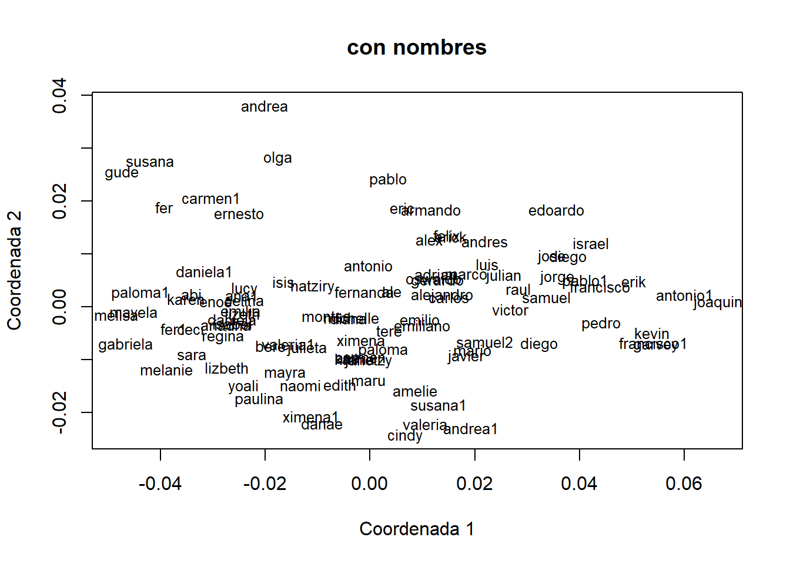
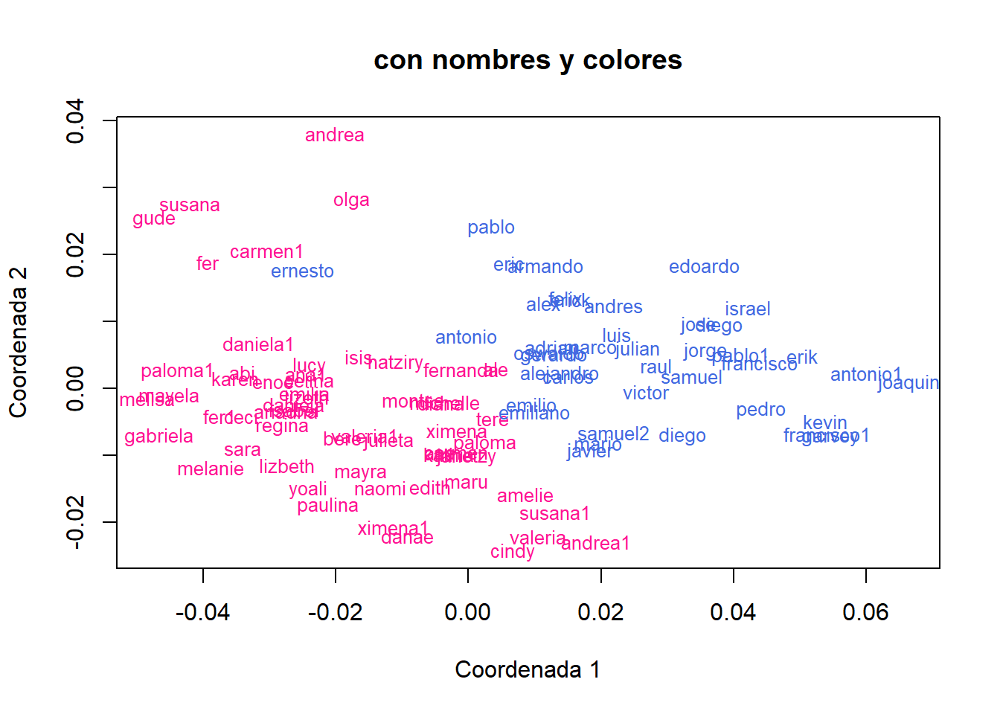
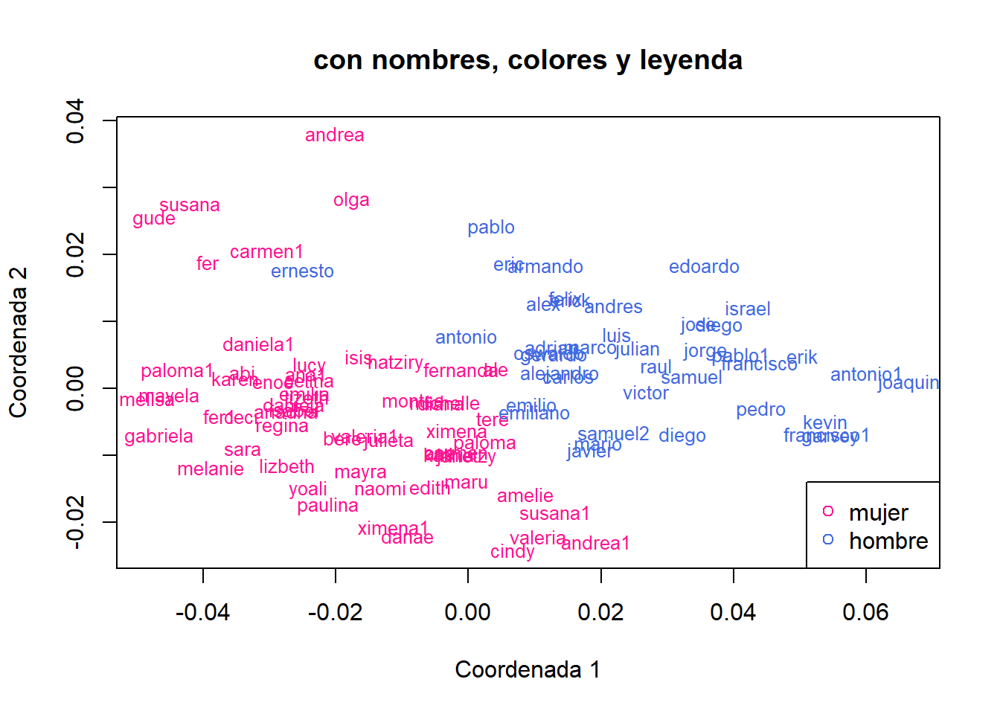
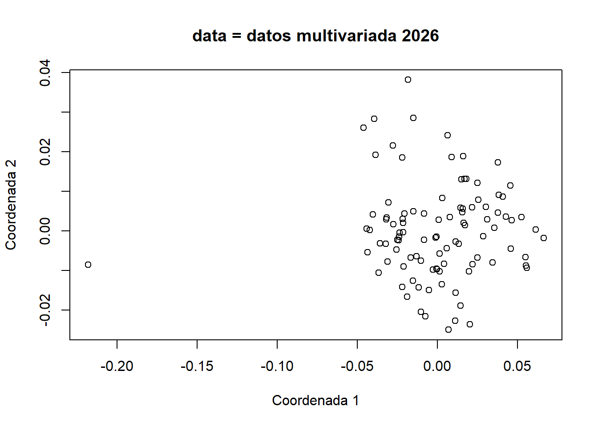
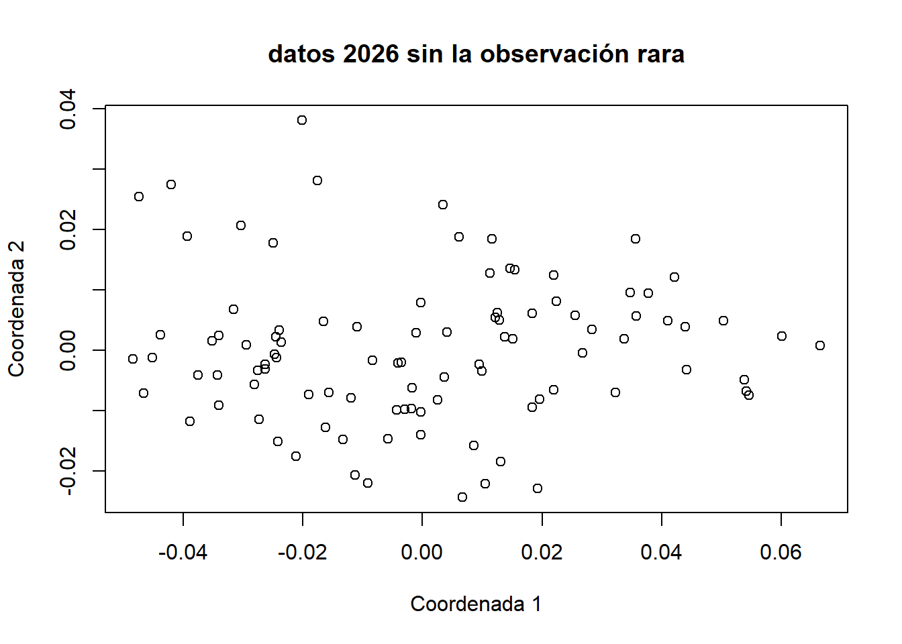
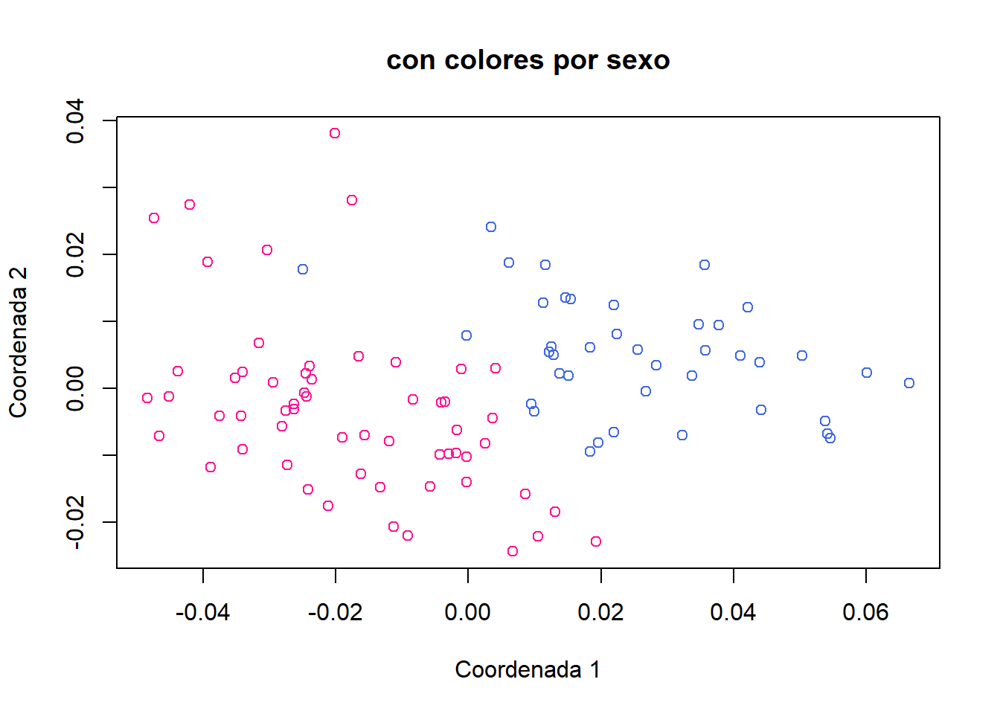

<!DOCTYPE html>
<html xmlns="http://www.w3.org/1999/xhtml" lang="en" xml:lang="en"><head>

<meta charset="utf-8">
<meta name="generator" content="quarto-1.9.37">

<meta name="viewport" content="width=device-width, initial-scale=1.0, user-scalable=yes">

<meta name="author" content="Samuel Solís Barrón">

<title>7&nbsp; PCoA – Bitácora de Estadística Multivariada con R</title>
<style>
/* Default styles provided by pandoc.
** See https://pandoc.org/MANUAL.html#variables-for-html for config info.
*/
code{white-space: pre-wrap;}
span.smallcaps{font-variant: small-caps;}
div.columns{display: flex; gap: min(4vw, 1.5em);}
div.column{flex: auto; overflow-x: auto;}
div.hanging-indent{margin-left: 1.5em; text-indent: -1.5em;}
ul.task-list{list-style: none;}
ul.task-list li input[type="checkbox"] {
  width: 0.8em;
  margin: 0 0.8em 0.2em -1em; /* quarto-specific, see https://github.com/quarto-dev/quarto-cli/issues/4556 */ 
  vertical-align: middle;
}
/* CSS for syntax highlighting */
html { -webkit-text-size-adjust: 100%; }
pre > code.sourceCode { white-space: pre; position: relative; }
pre > code.sourceCode > span { display: inline-block; line-height: 1.25; }
pre > code.sourceCode > span:empty { height: 1.2em; }
.sourceCode { overflow: visible; }
code.sourceCode > span { color: inherit; text-decoration: inherit; }
div.sourceCode { margin: 1em 0; }
pre.sourceCode { margin: 0; }
@media screen {
div.sourceCode { overflow: auto; }
}
@media print {
pre > code.sourceCode { white-space: pre-wrap; }
pre > code.sourceCode > span { text-indent: -5em; padding-left: 5em; }
}
pre.numberSource code
  { counter-reset: source-line 0; }
pre.numberSource code > span
  { position: relative; left: -4em; counter-increment: source-line; }
pre.numberSource code > span > a:first-child::before
  { content: counter(source-line);
    position: relative; left: -1em; text-align: right; vertical-align: baseline;
    border: none; display: inline-block;
    -webkit-touch-callout: none; -webkit-user-select: none;
    -khtml-user-select: none; -moz-user-select: none;
    -ms-user-select: none; user-select: none;
    padding: 0 4px; width: 4em;
  }
pre.numberSource { margin-left: 3em;  padding-left: 4px; }
div.sourceCode
  {   }
@media screen {
pre > code.sourceCode > span > a:first-child::before { text-decoration: underline; }
}
</style>


<script src="../site_libs/quarto-nav/quarto-nav.js"></script>
<script src="../site_libs/quarto-nav/headroom.min.js"></script>
<script src="../site_libs/clipboard/clipboard.min.js"></script>
<script src="../site_libs/quarto-search/autocomplete.umd.js"></script>
<script src="../site_libs/quarto-search/fuse.min.js"></script>
<script src="../site_libs/quarto-search/quarto-search.js"></script>
<meta name="quarto:offset" content="../">
<link href="../multivariate-hypotheses/multivariate-hypotheses.html" rel="next">
<link href="../pca/pca.html" rel="prev">
<script src="../site_libs/quarto-html/quarto.js" type="module"></script>
<script src="../site_libs/quarto-html/tabsets/tabsets.js" type="module"></script>
<script src="../site_libs/quarto-html/popper.min.js"></script>
<script src="../site_libs/quarto-html/tippy.umd.min.js"></script>
<script src="../site_libs/quarto-html/anchor.min.js"></script>
<link href="../site_libs/quarto-html/tippy.css" rel="stylesheet">
<link href="../site_libs/quarto-html/quarto-syntax-highlighting-f79c7fb6db380d32be398468f2fb58cf.css" rel="stylesheet" id="quarto-text-highlighting-styles">
<script src="../site_libs/bootstrap/bootstrap.min.js"></script>
<link href="../site_libs/bootstrap/bootstrap-icons.css" rel="stylesheet">
<link href="../site_libs/bootstrap/bootstrap-10cd32ddddd1e7f9444b54219d42bcb8.min.css" rel="stylesheet" append-hash="true" id="quarto-bootstrap" data-mode="light">
<script id="quarto-search-options" type="application/json">{
  "location": "sidebar",
  "copy-button": false,
  "collapse-after": 3,
  "panel-placement": "start",
  "type": "textbox",
  "limit": 50,
  "keyboard-shortcut": [
    "f",
    "/",
    "s"
  ],
  "show-item-context": false,
  "language": {
    "search-no-results-text": "No results",
    "search-matching-documents-text": "matching documents",
    "search-copy-link-title": "Copy link to search",
    "search-hide-matches-text": "Hide additional matches",
    "search-more-match-text": "more match in this document",
    "search-more-matches-text": "more matches in this document",
    "search-clear-button-title": "Clear",
    "search-text-placeholder": "",
    "search-detached-cancel-button-title": "Cancel",
    "search-submit-button-title": "Submit",
    "search-label": "Search"
  }
}</script>
<link href="../site_libs/htmltools-fill-0.5.9/fill.css" rel="stylesheet">

<script src="../site_libs/htmlwidgets-1.6.4/htmlwidgets.js"></script>

<link href="../site_libs/datatables-css-0.0.0/datatables-crosstalk.css" rel="stylesheet">

<script src="../site_libs/datatables-binding-0.34.0/datatables.js"></script>

<script src="../site_libs/jquery-3.6.0/jquery-3.6.0.min.js"></script>

<link href="../site_libs/dt-core-1.13.6/css/jquery.dataTables.min.css" rel="stylesheet">

<link href="../site_libs/dt-core-1.13.6/css/jquery.dataTables.extra.css" rel="stylesheet">

<script src="../site_libs/dt-core-1.13.6/js/jquery.dataTables.min.js"></script>

<link href="../site_libs/crosstalk-1.2.2/css/crosstalk.min.css" rel="stylesheet">

<script src="../site_libs/crosstalk-1.2.2/js/crosstalk.min.js"></script>


<link rel="stylesheet" href="../styles.css">
</head>

<body class="nav-sidebar floating quarto-light">

<div id="quarto-search-results"></div>
  <header id="quarto-header" class="headroom fixed-top">
  <nav class="quarto-secondary-nav">
    <div class="container-fluid d-flex">
      <button type="button" class="quarto-btn-toggle btn" data-bs-toggle="collapse" role="button" data-bs-target=".quarto-sidebar-collapse-item" aria-controls="quarto-sidebar" aria-expanded="false" aria-label="Toggle sidebar navigation" onclick="if (window.quartoToggleHeadroom) { window.quartoToggleHeadroom(); }">
        <i class="bi bi-layout-text-sidebar-reverse"></i>
      </button>
        <nav class="quarto-page-breadcrumbs" aria-label="breadcrumb"><ol class="breadcrumb"><li class="breadcrumb-item"><a href="../pcoa/pcoa.html"><span class="chapter-number">7</span>&nbsp; <span class="chapter-title">PCoA</span></a></li></ol></nav>
        <a class="flex-grow-1" role="navigation" data-bs-toggle="collapse" data-bs-target=".quarto-sidebar-collapse-item" aria-controls="quarto-sidebar" aria-expanded="false" aria-label="Toggle sidebar navigation" onclick="if (window.quartoToggleHeadroom) { window.quartoToggleHeadroom(); }">      
        </a>
      <button type="button" class="btn quarto-search-button" aria-label="Search" onclick="window.quartoOpenSearch();">
        <i class="bi bi-search"></i>
      </button>
    </div>
  </nav>
</header>
<!-- content -->
<div id="quarto-content" class="quarto-container page-columns page-rows-contents page-layout-article">
<!-- sidebar -->
  <nav id="quarto-sidebar" class="sidebar collapse collapse-horizontal quarto-sidebar-collapse-item sidebar-navigation floating overflow-auto">
    <div class="pt-lg-2 mt-2 text-left sidebar-header">
    <div class="sidebar-title mb-0 py-0">
      <a href="../">Bitácora de Estadística Multivariada con R</a> 
    </div>
      </div>
        <div class="mt-2 flex-shrink-0 align-items-center">
        <div class="sidebar-search">
        <div id="quarto-search" class="" title="Search"></div>
        </div>
        </div>
    <div class="sidebar-menu-container"> 
    <ul class="list-unstyled mt-1">
        <li class="sidebar-item">
  <div class="sidebar-item-container"> 
  <a href="../index.html" class="sidebar-item-text sidebar-link">
 <span class="menu-text"><span class="chapter-number">1</span>&nbsp; <span class="chapter-title">Prefacio</span></span></a>
  </div>
</li>
        <li class="sidebar-item">
  <div class="sidebar-item-container"> 
  <a href="../matrix-algebra/matrix-algebra.html" class="sidebar-item-text sidebar-link">
 <span class="menu-text"><span class="chapter-number">2</span>&nbsp; <span class="chapter-title">Matrix Algebra</span></span></a>
  </div>
</li>
        <li class="sidebar-item">
  <div class="sidebar-item-container"> 
  <a href="../data-frame/data-frame.html" class="sidebar-item-text sidebar-link">
 <span class="menu-text"><span class="chapter-number">3</span>&nbsp; <span class="chapter-title">Data Frame</span></span></a>
  </div>
</li>
        <li class="sidebar-item">
  <div class="sidebar-item-container"> 
  <a href="../data-visualization/data-visualization.html" class="sidebar-item-text sidebar-link">
 <span class="menu-text"><span class="chapter-number">4</span>&nbsp; <span class="chapter-title">Visualización de Datos</span></span></a>
  </div>
</li>
        <li class="sidebar-item">
  <div class="sidebar-item-container"> 
  <a href="../manova/manova.html" class="sidebar-item-text sidebar-link">
 <span class="menu-text"><span class="chapter-number">5</span>&nbsp; <span class="chapter-title">MANOVA</span></span></a>
  </div>
</li>
        <li class="sidebar-item">
  <div class="sidebar-item-container"> 
  <a href="../pca/pca.html" class="sidebar-item-text sidebar-link">
 <span class="menu-text"><span class="chapter-number">6</span>&nbsp; <span class="chapter-title">PCA</span></span></a>
  </div>
</li>
        <li class="sidebar-item">
  <div class="sidebar-item-container"> 
  <a href="../pcoa/pcoa.html" class="sidebar-item-text sidebar-link active">
 <span class="menu-text"><span class="chapter-number">7</span>&nbsp; <span class="chapter-title">PCoA</span></span></a>
  </div>
</li>
        <li class="sidebar-item">
  <div class="sidebar-item-container"> 
  <a href="../multivariate-hypotheses/multivariate-hypotheses.html" class="sidebar-item-text sidebar-link">
 <span class="menu-text"><span class="chapter-number">8</span>&nbsp; <span class="chapter-title">Pruebas de Hipótesis Multivariadas</span></span></a>
  </div>
</li>
    </ul>
    </div>
</nav>
<div id="quarto-sidebar-glass" class="quarto-sidebar-collapse-item" data-bs-toggle="collapse" data-bs-target=".quarto-sidebar-collapse-item"></div>
<!-- margin-sidebar -->
    <div id="quarto-margin-sidebar" class="sidebar margin-sidebar">
        <nav id="TOC" role="doc-toc" class="toc-active">
    <h2 id="toc-title">Table of contents</h2>
   
  <ul>
  <li><a href="#objetivo" id="toc-objetivo" class="nav-link active" data-scroll-target="#objetivo"><span class="header-section-number">7.1</span> Objetivo</a></li>
  <li><a href="#datos-utilizados" id="toc-datos-utilizados" class="nav-link" data-scroll-target="#datos-utilizados"><span class="header-section-number">7.2</span> Datos Utilizados</a></li>
  <li><a href="#procedimiento" id="toc-procedimiento" class="nav-link" data-scroll-target="#procedimiento"><span class="header-section-number">7.3</span> Procedimiento</a>
  <ul>
  <li><a href="#calcular-la-matriz-de-disimilaridades" id="toc-calcular-la-matriz-de-disimilaridades" class="nav-link" data-scroll-target="#calcular-la-matriz-de-disimilaridades"><span class="header-section-number">7.3.1</span> Calcular la matriz de disimilaridades</a></li>
  <li><a href="#calcular-el-pcoa" id="toc-calcular-el-pcoa" class="nav-link" data-scroll-target="#calcular-el-pcoa"><span class="header-section-number">7.3.2</span> Calcular el PCoA</a></li>
  <li><a href="#eliminar-la-observación-atípica-renglón-41" id="toc-eliminar-la-observación-atípica-renglón-41" class="nav-link" data-scroll-target="#eliminar-la-observación-atípica-renglón-41"><span class="header-section-number">7.3.3</span> Eliminar la observación atípica (renglón 41)</a></li>
  <li><a href="#recalcular-el-pcoa-sin-la-observación-atípica" id="toc-recalcular-el-pcoa-sin-la-observación-atípica" class="nav-link" data-scroll-target="#recalcular-el-pcoa-sin-la-observación-atípica"><span class="header-section-number">7.3.4</span> Recalcular el PCoA sin la observación atípica</a></li>
  </ul></li>
  <li><a href="#gráficas-personalizadas" id="toc-gráficas-personalizadas" class="nav-link" data-scroll-target="#gráficas-personalizadas"><span class="header-section-number">7.4</span> Gráficas personalizadas</a>
  <ul>
  <li><a href="#a-gráfica-con-colores-por-sexo" id="toc-a-gráfica-con-colores-por-sexo" class="nav-link" data-scroll-target="#a-gráfica-con-colores-por-sexo"><span class="header-section-number">7.4.1</span> a) Gráfica con colores por sexo</a></li>
  <li><a href="#b-gráfica-con-nombres-un-solo-color" id="toc-b-gráfica-con-nombres-un-solo-color" class="nav-link" data-scroll-target="#b-gráfica-con-nombres-un-solo-color"><span class="header-section-number">7.4.2</span> b) Gráfica con nombres (un solo color)</a></li>
  <li><a href="#c-gráfica-con-nombres-y-colores-por-sexo" id="toc-c-gráfica-con-nombres-y-colores-por-sexo" class="nav-link" data-scroll-target="#c-gráfica-con-nombres-y-colores-por-sexo"><span class="header-section-number">7.4.3</span> c) Gráfica con nombres y colores por sexo</a></li>
  <li><a href="#d-gráfica-con-nombres-colores-y-leyenda" id="toc-d-gráfica-con-nombres-colores-y-leyenda" class="nav-link" data-scroll-target="#d-gráfica-con-nombres-colores-y-leyenda"><span class="header-section-number">7.4.4</span> d) Gráfica con nombres, colores y leyenda</a></li>
  </ul></li>
  <li><a href="#resultados" id="toc-resultados" class="nav-link" data-scroll-target="#resultados"><span class="header-section-number">7.5</span> Resultados</a>
  <ul>
  <li><a href="#gráfica-1-pcoa-con-todos-los-datos-incluyendo-el-outlier" id="toc-gráfica-1-pcoa-con-todos-los-datos-incluyendo-el-outlier" class="nav-link" data-scroll-target="#gráfica-1-pcoa-con-todos-los-datos-incluyendo-el-outlier"><span class="header-section-number">7.5.1</span> Gráfica 1 — PCoA con todos los datos (incluyendo el outlier)</a></li>
  <li><a href="#gráfica-2-pcoa-sin-la-observación-atípica" id="toc-gráfica-2-pcoa-sin-la-observación-atípica" class="nav-link" data-scroll-target="#gráfica-2-pcoa-sin-la-observación-atípica"><span class="header-section-number">7.5.2</span> Gráfica 2 — PCoA sin la observación atípica</a></li>
  <li><a href="#gráfica-3-pcoa-con-colores-por-sexo" id="toc-gráfica-3-pcoa-con-colores-por-sexo" class="nav-link" data-scroll-target="#gráfica-3-pcoa-con-colores-por-sexo"><span class="header-section-number">7.5.3</span> Gráfica 3 — PCoA con colores por sexo</a></li>
  <li><a href="#gráfica-4-pcoa-con-nombres-un-solo-color" id="toc-gráfica-4-pcoa-con-nombres-un-solo-color" class="nav-link" data-scroll-target="#gráfica-4-pcoa-con-nombres-un-solo-color"><span class="header-section-number">7.5.4</span> Gráfica 4 — PCoA con nombres (un solo color)</a></li>
  <li><a href="#gráfica-5-pcoa-con-nombres-colores-y-leyenda-versión-final" id="toc-gráfica-5-pcoa-con-nombres-colores-y-leyenda-versión-final" class="nav-link" data-scroll-target="#gráfica-5-pcoa-con-nombres-colores-y-leyenda-versión-final"><span class="header-section-number">7.5.5</span> Gráfica 5 — PCoA con nombres, colores y leyenda (versión final)</a></li>
  </ul></li>
  <li><a href="#problemas-encontrados" id="toc-problemas-encontrados" class="nav-link" data-scroll-target="#problemas-encontrados"><span class="header-section-number">7.6</span> Problemas Encontrados</a></li>
  <li><a href="#aprendizaje" id="toc-aprendizaje" class="nav-link" data-scroll-target="#aprendizaje"><span class="header-section-number">7.7</span> Aprendizaje</a></li>
  </ul>
</nav>
    </div>
<!-- main -->
<main class="content" id="quarto-document-content">

<header id="title-block-header" class="quarto-title-block default">
<div class="quarto-title">
<h1 class="title"><span class="chapter-number">7</span>&nbsp; <span class="chapter-title">PCoA</span></h1>
<p class="subtitle lead">Análisis de Coordenadas Principales (PCoA)</p>
</div>


<div class="quarto-title-meta">

    <div>
    <div class="quarto-title-meta-heading">Author</div>
    <div class="quarto-title-meta-contents">
             <p>Samuel Solís Barrón </p>
          </div>
  </div>
    
  
    
  </div>
  


</header>


<section id="objetivo" class="level2" data-number="7.1">
<h2 data-number="7.1" class="anchored" data-anchor-id="objetivo"><span class="header-section-number">7.1</span> Objetivo</h2>
<ul>
<li>Aprender a realizar un Análisis de Coordenadas Principales (PCoA) a partir de una <strong>matriz de distancias o disimilaridades</strong> entre individuos, lo que permite usar cualquier métrica de distancia y no solo la euclidiana.</li>
<li>Calcular una <strong>matriz de disimilaridades</strong> entre individuos usando la métrica de Bray-Curtis, adecuada para datos de abundancias o medidas morfométricas no negativas.</li>
<li>Reducir la dimensionalidad de esa matriz a dos coordenadas principales que capturen la mayor variación posible entre individuos.</li>
<li>Visualizar los resultados en un diagrama de dispersión bidimensional.</li>
</ul>
</section>
<section id="datos-utilizados" class="level2" data-number="7.2">
<h2 data-number="7.2" class="anchored" data-anchor-id="datos-utilizados"><span class="header-section-number">7.2</span> Datos Utilizados</h2>
<div class="tabset-margin-container"></div><div class="panel-tabset">
<ul class="nav nav-tabs" role="tablist"><li class="nav-item" role="presentation"><a class="nav-link active" id="tabset-1-1-tab" data-bs-toggle="tab" data-bs-target="#tabset-1-1" role="tab" aria-controls="tabset-1-1" aria-selected="true" href="">paquetes</a></li><li class="nav-item" role="presentation"><a class="nav-link" id="tabset-1-2-tab" data-bs-toggle="tab" data-bs-target="#tabset-1-2" role="tab" aria-controls="tabset-1-2" aria-selected="false" href="">descripción general</a></li><li class="nav-item" role="presentation"><a class="nav-link" id="tabset-1-3-tab" data-bs-toggle="tab" data-bs-target="#tabset-1-3" role="tab" aria-controls="tabset-1-3" aria-selected="false" href="">código R</a></li><li class="nav-item" role="presentation"><a class="nav-link" id="tabset-1-4-tab" data-bs-toggle="tab" data-bs-target="#tabset-1-4" role="tab" aria-controls="tabset-1-4" aria-selected="false" href="">datos propios</a></li></ul>
<div class="tab-content">
<div id="tabset-1-1" class="tab-pane active" role="tabpanel" aria-labelledby="tabset-1-1-tab">
<section id="instalación-de-paquetes" class="level3" data-number="7.2.1">
<h3 data-number="7.2.1" class="anchored" data-anchor-id="instalación-de-paquetes"><span class="header-section-number">7.2.1</span> instalación de paquetes</h3>
<div class="cell">
<div class="code-copy-outer-scaffold"><div class="sourceCode cell-code" id="cb1"><pre class="sourceCode r code-with-copy"><code class="sourceCode r"><span id="cb1-1"><a href="#cb1-1" aria-hidden="true" tabindex="-1"></a><span class="co"># Abre un chunk de código R con el nombre/etiqueta "instalar-paquetes"</span></span>
<span id="cb1-2"><a href="#cb1-2" aria-hidden="true" tabindex="-1"></a></span>
<span id="cb1-3"><a href="#cb1-3" aria-hidden="true" tabindex="-1"></a><span class="co">#| eval: false</span></span>
<span id="cb1-4"><a href="#cb1-4" aria-hidden="true" tabindex="-1"></a><span class="co"># Opción de chunk: NO ejecuta este código al renderizar el documento</span></span>
<span id="cb1-5"><a href="#cb1-5" aria-hidden="true" tabindex="-1"></a></span>
<span id="cb1-6"><a href="#cb1-6" aria-hidden="true" tabindex="-1"></a><span class="co">#| echo: true</span></span>
<span id="cb1-7"><a href="#cb1-7" aria-hidden="true" tabindex="-1"></a><span class="co"># Opción de chunk: SÍ muestra el código fuente en el documento final</span></span>
<span id="cb1-8"><a href="#cb1-8" aria-hidden="true" tabindex="-1"></a></span>
<span id="cb1-9"><a href="#cb1-9" aria-hidden="true" tabindex="-1"></a><span class="fu">install.packages</span>(<span class="st">"vegan"</span>)</span></code></pre></div><button title="Copy to Clipboard" class="code-copy-button"><i class="bi"></i></button></div>
<div class="cell-output cell-output-stdout">
<pre><code>The following package(s) will be installed:
- vegan [2.7-5]
These packages will be installed into "~/multivariate-statistics/renv/library/windows/R-4.6/x86_64-w64-mingw32".

# Installing packages --------------------------------------------------------
✔ vegan 2.7-5                              [linked from cache]
Successfully installed 1 package in 14 milliseconds.</code></pre>
</div>
<div class="code-copy-outer-scaffold"><div class="sourceCode cell-code" id="cb3"><pre class="sourceCode r code-with-copy"><code class="sourceCode r"><span id="cb3-1"><a href="#cb3-1" aria-hidden="true" tabindex="-1"></a><span class="fu">install.packages</span>(<span class="st">"here"</span>)</span></code></pre></div><button title="Copy to Clipboard" class="code-copy-button"><i class="bi"></i></button></div>
<div class="cell-output cell-output-stdout">
<pre><code>The following package(s) will be installed:
- here [1.0.2]
These packages will be installed into "~/multivariate-statistics/renv/library/windows/R-4.6/x86_64-w64-mingw32".

# Installing packages --------------------------------------------------------
✔ here 1.0.2                               [linked from cache]
Successfully installed 1 package in 6.7 milliseconds.</code></pre>
</div>
<div class="code-copy-outer-scaffold"><div class="sourceCode cell-code" id="cb5"><pre class="sourceCode r code-with-copy"><code class="sourceCode r"><span id="cb5-1"><a href="#cb5-1" aria-hidden="true" tabindex="-1"></a><span class="co"># Descarga e instala el paquete "vegan" desde CRAN en el sistema.</span></span>
<span id="cb5-2"><a href="#cb5-2" aria-hidden="true" tabindex="-1"></a><span class="co"># Solo se necesita ejecutar una vez. Por eso eval: false (no se corre al renderizar).</span></span></code></pre></div><button title="Copy to Clipboard" class="code-copy-button"><i class="bi"></i></button></div>
</div>
</section>
<section id="instalación-de-librerías" class="level3" data-number="7.2.2">
<h3 data-number="7.2.2" class="anchored" data-anchor-id="instalación-de-librerías"><span class="header-section-number">7.2.2</span> instalación de librerías</h3>
<div class="cell">
<div class="code-copy-outer-scaffold"><div class="sourceCode cell-code" id="cb6"><pre class="sourceCode r code-with-copy"><code class="sourceCode r"><span id="cb6-1"><a href="#cb6-1" aria-hidden="true" tabindex="-1"></a><span class="co"># Abre un chunk de código R con el nombre "cargar-paquetes"</span></span>
<span id="cb6-2"><a href="#cb6-2" aria-hidden="true" tabindex="-1"></a></span>
<span id="cb6-3"><a href="#cb6-3" aria-hidden="true" tabindex="-1"></a><span class="co">#| eval: true</span></span>
<span id="cb6-4"><a href="#cb6-4" aria-hidden="true" tabindex="-1"></a><span class="co"># Opción de chunk: SÍ ejecuta este código al renderizar</span></span>
<span id="cb6-5"><a href="#cb6-5" aria-hidden="true" tabindex="-1"></a></span>
<span id="cb6-6"><a href="#cb6-6" aria-hidden="true" tabindex="-1"></a><span class="co">#| echo: true</span></span>
<span id="cb6-7"><a href="#cb6-7" aria-hidden="true" tabindex="-1"></a><span class="co"># Opción de chunk: SÍ muestra el código en el documento final</span></span>
<span id="cb6-8"><a href="#cb6-8" aria-hidden="true" tabindex="-1"></a></span>
<span id="cb6-9"><a href="#cb6-9" aria-hidden="true" tabindex="-1"></a><span class="fu">library</span>(vegan)</span>
<span id="cb6-10"><a href="#cb6-10" aria-hidden="true" tabindex="-1"></a><span class="fu">library</span>(here)</span>
<span id="cb6-11"><a href="#cb6-11" aria-hidden="true" tabindex="-1"></a></span>
<span id="cb6-12"><a href="#cb6-12" aria-hidden="true" tabindex="-1"></a><span class="co"># Carga el paquete "vegan" en la sesión activa de R para poder usar sus funciones.</span></span>
<span id="cb6-13"><a href="#cb6-13" aria-hidden="true" tabindex="-1"></a><span class="co"># Requiere que el paquete ya esté instalado previamente.</span></span>
<span id="cb6-14"><a href="#cb6-14" aria-hidden="true" tabindex="-1"></a></span>
<span id="cb6-15"><a href="#cb6-15" aria-hidden="true" tabindex="-1"></a><span class="co"># ── library(vegan) ────────────────────────────────────────────────────────────</span></span>
<span id="cb6-16"><a href="#cb6-16" aria-hidden="true" tabindex="-1"></a><span class="co"># vegan (Vegetation Analysis) es el paquete de R más usado para análisis</span></span>
<span id="cb6-17"><a href="#cb6-17" aria-hidden="true" tabindex="-1"></a><span class="co"># multivariados en ecología y morfometría. Provee:</span></span>
<span id="cb6-18"><a href="#cb6-18" aria-hidden="true" tabindex="-1"></a><span class="co">#   - vegdist(): matrices de disimilaridad con múltiples métricas.</span></span>
<span id="cb6-19"><a href="#cb6-19" aria-hidden="true" tabindex="-1"></a><span class="co">#   - cmdscale(): escalamiento multidimensional (PCoA).</span></span>
<span id="cb6-20"><a href="#cb6-20" aria-hidden="true" tabindex="-1"></a><span class="co">#   - anosim(), adonis2(): pruebas de hipótesis multivariadas.</span></span>
<span id="cb6-21"><a href="#cb6-21" aria-hidden="true" tabindex="-1"></a><span class="co">#   - ordplot(), ordiellipse(): herramientas de visualización de ordenaciones.</span></span></code></pre></div><button title="Copy to Clipboard" class="code-copy-button"><i class="bi"></i></button></div>
</div>
</section>
</div>
<div id="tabset-1-2" class="tab-pane" role="tabpanel" aria-labelledby="tabset-1-2-tab">
<p>La base de datos <code>datos-multivariada</code>. Proviene de las mediciones generadas durante el curso con variables morfométricas medidas en el grupo e incluye las mediciones de otras generaciones. Contiene una columna de identificador (columna 1), una columna de sexo (columna 2) y variables numéricas en las columnas restantes.</p>
</div>
<div id="tabset-1-3" class="tab-pane" role="tabpanel" aria-labelledby="tabset-1-3-tab">
<div class="cell">
<div class="code-copy-outer-scaffold"><div class="sourceCode cell-code" id="cb7"><pre class="sourceCode r code-with-copy"><code class="sourceCode r"><span id="cb7-1"><a href="#cb7-1" aria-hidden="true" tabindex="-1"></a><span class="co">#| echo: true</span></span>
<span id="cb7-2"><a href="#cb7-2" aria-hidden="true" tabindex="-1"></a><span class="co"># SÍ muestra el código en el documento</span></span>
<span id="cb7-3"><a href="#cb7-3" aria-hidden="true" tabindex="-1"></a></span>
<span id="cb7-4"><a href="#cb7-4" aria-hidden="true" tabindex="-1"></a><span class="co">#| eval: false</span></span>
<span id="cb7-5"><a href="#cb7-5" aria-hidden="true" tabindex="-1"></a><span class="co"># NO ejecuta el código al renderizar (solo se muestra como referencia/ejemplo)</span></span>
<span id="cb7-6"><a href="#cb7-6" aria-hidden="true" tabindex="-1"></a></span>
<span id="cb7-7"><a href="#cb7-7" aria-hidden="true" tabindex="-1"></a>datos <span class="ot">&lt;-</span> <span class="fu">read.csv</span>(</span>
<span id="cb7-8"><a href="#cb7-8" aria-hidden="true" tabindex="-1"></a><span class="co"># Lee un archivo CSV y guarda el resultado en el objeto llamado "datos"</span></span>
<span id="cb7-9"><a href="#cb7-9" aria-hidden="true" tabindex="-1"></a></span>
<span id="cb7-10"><a href="#cb7-10" aria-hidden="true" tabindex="-1"></a>  <span class="fu">here</span>(<span class="st">"data"</span>, <span class="st">"datos-multivariada.csv"</span>),</span>
<span id="cb7-11"><a href="#cb7-11" aria-hidden="true" tabindex="-1"></a><span class="co"># here() construye la ruta al archivo de forma relativa al proyecto.</span></span>
<span id="cb7-12"><a href="#cb7-12" aria-hidden="true" tabindex="-1"></a><span class="co"># Busca el archivo "datos-multivariada.csv" dentro de la carpeta "data/"</span></span>
<span id="cb7-13"><a href="#cb7-13" aria-hidden="true" tabindex="-1"></a></span>
<span id="cb7-14"><a href="#cb7-14" aria-hidden="true" tabindex="-1"></a>  <span class="at">dec =</span> <span class="st">","</span>,</span>
<span id="cb7-15"><a href="#cb7-15" aria-hidden="true" tabindex="-1"></a><span class="co"># Indica que el separador decimal en el CSV es la coma (formato europeo/latino)</span></span>
<span id="cb7-16"><a href="#cb7-16" aria-hidden="true" tabindex="-1"></a></span>
<span id="cb7-17"><a href="#cb7-17" aria-hidden="true" tabindex="-1"></a>  <span class="at">sep =</span> <span class="st">";"</span>,</span>
<span id="cb7-18"><a href="#cb7-18" aria-hidden="true" tabindex="-1"></a><span class="co"># Indica que las columnas del CSV están separadas por punto y coma</span></span>
<span id="cb7-19"><a href="#cb7-19" aria-hidden="true" tabindex="-1"></a></span>
<span id="cb7-20"><a href="#cb7-20" aria-hidden="true" tabindex="-1"></a>  <span class="at">stringsAsFactors =</span> <span class="cn">FALSE</span></span>
<span id="cb7-21"><a href="#cb7-21" aria-hidden="true" tabindex="-1"></a><span class="co"># Evita que las columnas de texto se conviertan automáticamente en factores.</span></span>
<span id="cb7-22"><a href="#cb7-22" aria-hidden="true" tabindex="-1"></a><span class="co"># Útil para mantener control sobre los tipos de datos al importar.</span></span>
<span id="cb7-23"><a href="#cb7-23" aria-hidden="true" tabindex="-1"></a>)</span></code></pre></div><button title="Copy to Clipboard" class="code-copy-button"><i class="bi"></i></button></div>
</div>
</div>
<div id="tabset-1-4" class="tab-pane" role="tabpanel" aria-labelledby="tabset-1-4-tab">
<div class="cell">
<div class="code-copy-outer-scaffold"><div class="sourceCode cell-code" id="cb8"><pre class="sourceCode r code-with-copy"><code class="sourceCode r"><span id="cb8-1"><a href="#cb8-1" aria-hidden="true" tabindex="-1"></a><span class="co"># Abre un chunk sin nombre/etiqueta</span></span>
<span id="cb8-2"><a href="#cb8-2" aria-hidden="true" tabindex="-1"></a></span>
<span id="cb8-3"><a href="#cb8-3" aria-hidden="true" tabindex="-1"></a><span class="co">#| echo: false</span></span>
<span id="cb8-4"><a href="#cb8-4" aria-hidden="true" tabindex="-1"></a><span class="co"># NO muestra el código fuente en el documento (solo se ve el resultado)</span></span>
<span id="cb8-5"><a href="#cb8-5" aria-hidden="true" tabindex="-1"></a></span>
<span id="cb8-6"><a href="#cb8-6" aria-hidden="true" tabindex="-1"></a><span class="co">#| eval: true</span></span>
<span id="cb8-7"><a href="#cb8-7" aria-hidden="true" tabindex="-1"></a><span class="co"># SÍ ejecuta el código al renderizar</span></span>
<span id="cb8-8"><a href="#cb8-8" aria-hidden="true" tabindex="-1"></a></span>
<span id="cb8-9"><a href="#cb8-9" aria-hidden="true" tabindex="-1"></a>datos <span class="ot">&lt;-</span> <span class="fu">read.csv</span>(</span>
<span id="cb8-10"><a href="#cb8-10" aria-hidden="true" tabindex="-1"></a><span class="co"># Lee el mismo archivo CSV (esta vez sí se ejecuta realmente al renderizar)</span></span>
<span id="cb8-11"><a href="#cb8-11" aria-hidden="true" tabindex="-1"></a></span>
<span id="cb8-12"><a href="#cb8-12" aria-hidden="true" tabindex="-1"></a>  <span class="fu">here</span>(<span class="st">"data"</span>, <span class="st">"datos-multivariada.csv"</span>),</span>
<span id="cb8-13"><a href="#cb8-13" aria-hidden="true" tabindex="-1"></a><span class="co"># Ruta relativa al archivo usando here()</span></span>
<span id="cb8-14"><a href="#cb8-14" aria-hidden="true" tabindex="-1"></a></span>
<span id="cb8-15"><a href="#cb8-15" aria-hidden="true" tabindex="-1"></a>  <span class="at">dec =</span> <span class="st">","</span>,</span>
<span id="cb8-16"><a href="#cb8-16" aria-hidden="true" tabindex="-1"></a><span class="co"># Separador decimal: coma</span></span>
<span id="cb8-17"><a href="#cb8-17" aria-hidden="true" tabindex="-1"></a></span>
<span id="cb8-18"><a href="#cb8-18" aria-hidden="true" tabindex="-1"></a>  <span class="at">sep =</span> <span class="st">","</span>,</span>
<span id="cb8-19"><a href="#cb8-19" aria-hidden="true" tabindex="-1"></a><span class="co"># Separador de columnas: punto y coma</span></span>
<span id="cb8-20"><a href="#cb8-20" aria-hidden="true" tabindex="-1"></a></span>
<span id="cb8-21"><a href="#cb8-21" aria-hidden="true" tabindex="-1"></a>  <span class="at">stringsAsFactors =</span> <span class="cn">FALSE</span></span>
<span id="cb8-22"><a href="#cb8-22" aria-hidden="true" tabindex="-1"></a><span class="co"># No convierte texto a factores automáticamente</span></span>
<span id="cb8-23"><a href="#cb8-23" aria-hidden="true" tabindex="-1"></a>)</span>
<span id="cb8-24"><a href="#cb8-24" aria-hidden="true" tabindex="-1"></a></span>
<span id="cb8-25"><a href="#cb8-25" aria-hidden="true" tabindex="-1"></a>DT<span class="sc">::</span><span class="fu">datatable</span>(datos, <span class="at">options =</span> <span class="fu">list</span>(<span class="at">pageLength =</span> <span class="dv">10</span>))</span></code></pre></div><button title="Copy to Clipboard" class="code-copy-button"><i class="bi"></i></button></div>
<div class="cell-output-display">
<div class="datatables html-widget html-fill-item" id="htmlwidget-a678e60fa6f31ad5d0ca" style="width:100%;height:auto;"></div>
<script type="application/json" data-for="htmlwidget-a678e60fa6f31ad5d0ca">{"x":{"filter":"none","vertical":false,"data":[["1","2","3","4","5","6","7","8","9","10","11","12","13","14","15","16","17","18","19","20","21","22","23","24","25","26","27","28","29","30","31","32","33","34","35","36","37","38","39","40","41","42","43","44","45","46","47","48","49","50","51","52","53","54","55","56","57","58","59","60","61","62","63","64","65","66","67","68","69","70","71","72","73","74","75","76","77","78","79","80","81","82","83","84","85","86","87","88","89","90","91","92","93","94","95","96","97","98","99"],["carmen","isabel","enoe","ariadna","edoardo","lizbeth","jorge","javier","fernanda","paloma","francisco","andres","cindy","gabriela","ana","daniela","edith","sara","gerardo","emilio","carlos","paloma1","michelle","mayela","diego","fer","tere","marco","karen","lucy","eric","susana","andrea","pablo","erick","alex","isis","israel","gude","armando","nahum","hatziry","naomi","ceci","raul","oswaldo","jose","olga","felix","pablo1","fer1","adrian","antonio","luis","julian","regina","ernesto","emilia","daniela1","susana1","kevin","ximena","antonio1","mayra","ale","janetzy","yoali","pedro","melisa","valeria","andrea1","diana","ximena1","samuel","mario","alejandro","valeria1","erik","abi","francisco1","carmen1","garvey","melanie","bere","diego","montse","kathia","emiliano","lizeth","celina ","samuel2","paulina","amelie","danae","ana1","victor","maru","julieta","joaquin"],["mujer","mujer","mujer","mujer","hombre","mujer","hombre","hombre","mujer","mujer","hombre","hombre","mujer","mujer","mujer","mujer","mujer","mujer","hombre","hombre","hombre","mujer","mujer","mujer","hombre","mujer","mujer","hombre","mujer","mujer","hombre","mujer","mujer","hombre","hombre","hombre","mujer","hombre","mujer","hombre","hombre","mujer","mujer","mujer","hombre","hombre","hombre","mujer","hombre","hombre","mujer","hombre","hombre","hombre","hombre","mujer","hombre","mujer","mujer","mujer","hombre","mujer","hombre","mujer","mujer","mujer","mujer","hombre","mujer","mujer","mujer","mujer","mujer","hombre","hombre","hombre","mujer","hombre","mujer","hombre","mujer","hombre","mujer","mujer","hombre","mujer","mujer","hombre","mujer","mujer","hombre","mujer","mujer","mujer","mujer","hombre","mujer","mujer","hombre"],[169,159,158,158,178,160,175,179,163,168,185,170,175,156,164,161,170,159,170,170,175,155,167,153,178,152,167,163,158,160,169,150,159,165,169,166,155,173,144,165,101,160,163,156,172,167,169,150,168,176,151,169,165,172,169,156,154,160,158,168,184,166,182,163,163,165,159,179,153,172,176,162,164,180,170,173,158,176,160,185,152,187,151,157,175,163,165,165,153,156,165,156,165,161,152,170,164,158,183],[74.5,69.5,68.5,70,77,70,80,77,76,77,81,76,75,67,75,67,72,68,76,78,73,59,72,60.1,70.5,66,72,74,61,63,65,58,56,65,72,70.8,64.5,71,56,67.59999999999999,43,69,69,60.5,76,72,78,65,73,80,70,70,67,71,71,67,56,56,52,75,86,70,82,65,69.5,73,69,82,64,73,74,69,72,72,77,75,73,76,61,77,67.5,78,65.5,67,78,55,69.5,72.5,66.5,68.5,77,71,74,72.5,68.5,76.5,69.5,70.5,82.5],[89,82,80,84,88,85,94,92,85,89,96,89,94,79,90,85,90,85,88,89,93,85,89.5,87.5,101,74,93,99,86,88.5,89.59999999999999,80,81,88,90,92,97,103.5,82,93,28,90,93,89.8,97,95,98,88,88,96,81,95,93,97,102.5,92,93,95,90,105,103,96.5,99,95,98,95,92,102,81,100,102.5,96,93,101,100,90,90,105,81,109,80.5,110,91,94,105,99,97,96,92,87,103,94,104,98,87,100,99,95,109],[24.5,24.5,24,23,29,24,27.5,27.2,25,25.5,29,28,24.5,23,25.5,23,24,23,28,26,24.5,21,23.5,23.5,27,22,25,26,24,24.5,26.5,23,24,27,25,25,21,26.2,21,28.4,17,25,25,23,26.5,26,27.5,25,27,29,24,26,26,27,25,21,23,22,23.5,26,27.5,23,29,24.5,25,25,23,27.3,23,25,25,24,24,26,26,26,25,29,25,27,21.5,28,24,24,26.5,24.5,23,26,23.5,24,26.5,23.5,25.5,24.5,23.5,27,24,23,28.5],[42.5,42,43,42,53,39,50,47,43,45,50.5,49,40,36,43,42,40,40,46,45,50,42,48,38,57.5,50,42,54,42,44,50,45,52,55,54,54.3,48.2,58,43,52.9,34,46,36,38,49,49,50.5,48,50,54,39,50,46,50,56,44,49,45,46,45,57,45,68,38,53.5,45,37,54,37,41.5,41,45,36,53,44,47,43,50.5,40,48,50,54,38,43,47,44,42,46,44,43,46,39,44,41,43,50,41,40,52],[32.1,31,33.5,34,46,31.8,40.8,33,39,32,38.5,41.5,32.5,31.2,31.8,33,31.5,30.6,36,35.2,37,31,34,27,39.3,30,39,41,31,33,37,38,37,40,40,43.2,33.5,48.5,35,41.6,27,34.5,31.5,30.5,45,37.5,44,43,40,39,34,40,39,40,37,29,34,31,31,32,35,34.3,46,34,34,31,31,36,33,31,35,35,32,40,38,36,32,41,31,41,33,35.5,30.7,31.5,37.3,34.5,35,36.2,32.6,35,37.1,31.2,32.6,31.5,33,38,33,41,41.3],[56,56,54,52,61,56,65,54,60,57,59,62,55,54,57.5,53,55,53,59,58,54.7,57.6,55,55,58.5,54,56,55,54,55,59.2,54,57,56,60,56.5,52.5,59.5,58,57.9,51,55,56,57,58,58,59,55,62,63,55,56,55,58,59,54,56,55,56,54,60.5,56,55,52,54,55,55,57.5,56,58,57,57,56,58,56,57.1,55,68,57,65,54,60,52,55,57,57,57,61,56,55,62,56,58,54,60,59,60,52,63],[2.95,3.45,2.97,2.96,3.29,2.8,4,3,3.07,3.6,4.13,3.71,2.92,2.82,2.85,3.1,3.1,2.32,3.58,3.04,3,2.5,2.5,3,4,2.5,3.5,3,2.5,2.5,2.7,3,4,4,3.5,3.4,3,4,3.4,1.8,3,3.5,4,3,3.5,5,4,3,3,4,3,3,3,3,5,4,4,4,3.5,3,3.5,3.4,3,3,3.5,4,4,5,3,3.5,3.5,4,3.4,3.6,3,5,3.5,4,5,4.5,4.5,3.32,3.12,3.17,3.11,2.78,3.49,3.33,3.24,3.11,4.72,2.57,3.02,2.56,3.33,2.89,3.53,2.98,3.86],[5.93,5.18,3.99,5.41,5.76,4.39,5.61,5.11,5.15,4.68,5.51,5.53,4.41,5.8,4.7,5.16,5.8,5.55,5.8,5.3,5.5,5,4.3,6.3,7.3,5,6,6,6.7,6.2,6.8,5.5,7,5,6,5.8,6.3,7,7.7,6.2,4.5,5.5,6,5,8,8,9,7,5.5,5.5,5,5,7,7.5,7,5,7,6.5,6,5,7.4,7.2,5.4,6,6,5,4.8,6,5.5,5.5,5,5.5,5,5.5,6,6,6,7.3,6.5,5,6.5,5.23,5.75,5.03,6.69,5.16,5.87,5.69,6.34,5.63,5.9,5.28,6.54,5.2,5.44,5.67,5.92,5.17,4.3],[3.57,4.4,4.33,3.9,4.96,3.51,4.6,3.64,4.48,3.8,4.36,4.47,3.57,4.32,3.85,4.4,3.83,3.47,4.9,3.77,4.5,4,2.5,5,5.2,3.5,3.5,4,4.5,5,4.8,3,4.5,3.6,5,4.8,4,4.5,5,4.9,3.5,4.5,5,4,4,5,6,4,4,4.5,3.5,4.5,5,5,7,5,5,5,4.5,4.7,4.5,3,4,4,5,4,3,2,3,3.5,3.5,4,3.7,4,4,4.5,4,4.5,4,4,2.5,3.64,3.45,3.42,3.89,3.66,3.95,3.93,3.8,3.69,3.85,3.21,3.78,3.31,3.52,3.46,3.66,3.21,3.58],[6.1,5.58,5.41,5.91,6.95,6.07,6.14,5.65,5.64,6.72,6.89,6.67,5,5.5,6.1,5.9,5.68,5.5,6.5,5.42,6.5,5.9,6,6.7,6.8,5,7,8,5.4,5.7,6,5,6,5.5,7,6.5,6.2,7.5,7.3,7,5,6,6.5,7,7,6.5,8,6.5,7.5,6.5,6,6.5,7,7.5,7,6,6,5,6,6,6.7,5,7,6,6,6,6,5.1,6,6,6.6,6,6.5,6.3,7,6.4,5,7,5,7.7,7.5,7.7,6,6.5,7,6.8,6,6.5,6,6.5,6.8,6,6,6,6.5,7,6.8,5.8,7.5],[20.5,19.4,20.2,19.4,20,29.9,20.8,23.1,20.2,18.6,22.8,21.5,20,18.4,19.6,19.5,19.3,18.5,22.3,20.9,19.5,17,16.5,20.2,21.8,21,20,21,20.3,18.9,22.5,23,22,25,19.3,20,20.2,22.3,19,20.5,18,21,19,20,18.5,19,21.5,20,20,20,17.5,19.5,19.5,20,20.5,17,17,18,18,21.3,19.3,19.1,21,19,21,21,19,21.5,17,20,20.8,20,17.4,19,22,21,19,22,21,19.5,19,20.5,18,20.4,21.5,20.5,19,20.2,18.5,17.6,20.1,17.4,20,17.5,19.5,20,21.5,19,24],[5.5,5.5,6.2,4.5,5.5,4,6,5,6,4.5,5,5,4.5,5,5.5,5.5,6,5,5.5,5,5,5.5,5,7.2,7,7,7,7,5.4,5.3,6.2,5,5,6,6,6.2,7,6,6.5,6,6,6,7.3,6.2,5,5.5,7,6,6,7,6,6,5.5,5.5,5,6.5,4.5,7,5.5,6,6,5,7.1,7,5,6,5,5.1,5,6.5,6.8,5.5,5.4,5.2,5.5,5.2,5,7,6,6.4,5.5,7,8,7,6.5,7.5,7.5,9,7,6,7.3,6.8,6,6.5,7.5,7,8,7.7,8.699999999999999],[1.42,1.5,1.26,1.16,1.64,1.5,1.53,1.63,1.14,1.35,1.84,1.7,1.49,1.12,1.63,1.1,1.4,1.1,2.1,1.97,2.5,2,1.5,1.2,2,2.5,2,2.5,1.5,1.3,1.7,1,1.8,1.5,1.5,1.7,1.8,1.7,2,3.4,1.5,2,2.3,2,1.5,2,2.5,1,2,2,1.5,2,2.5,2.5,1,1.5,2,1.5,2,1.4,1.5,1,1.2,1.3,2,2,1.8,1.5,1.2,1.8,1.3,2,1,1.8,2,2,2,2,2,2.3,2,2.45,1.96,1.56,1.77,1.79,1.34,1.09,0.98,1.39,2.06,1.77,0.98,1.65,1.2,1.31,1.3,1.5,1.8]],"container":"<table class=\"display\">\n  <thead>\n    <tr>\n      <th> <\/th>\n      <th>id<\/th>\n      <th>sexo<\/th>\n      <th>altura<\/th>\n      <th>largo_brazoD<\/th>\n      <th>largo_piernaD<\/th>\n      <th>largo_pieD<\/th>\n      <th>ancho_espalda<\/th>\n      <th>cuello<\/th>\n      <th>cabeza<\/th>\n      <th>separacion_ojos<\/th>\n      <th>largo_boca<\/th>\n      <th>ancho_nariz<\/th>\n      <th>largo_orejaD<\/th>\n      <th>largo_cara<\/th>\n      <th>ancho_frente<\/th>\n      <th>surco<\/th>\n    <\/tr>\n  <\/thead>\n<\/table>","options":{"pageLength":10,"columnDefs":[{"className":"dt-right","targets":[3,4,5,6,7,8,9,10,11,12,13,14,15,16]},{"orderable":false,"targets":0},{"name":" ","targets":0},{"name":"id","targets":1},{"name":"sexo","targets":2},{"name":"altura","targets":3},{"name":"largo_brazoD","targets":4},{"name":"largo_piernaD","targets":5},{"name":"largo_pieD","targets":6},{"name":"ancho_espalda","targets":7},{"name":"cuello","targets":8},{"name":"cabeza","targets":9},{"name":"separacion_ojos","targets":10},{"name":"largo_boca","targets":11},{"name":"ancho_nariz","targets":12},{"name":"largo_orejaD","targets":13},{"name":"largo_cara","targets":14},{"name":"ancho_frente","targets":15},{"name":"surco","targets":16}],"order":[],"autoWidth":false,"orderClasses":false}},"evals":[],"jsHooks":[]}</script>
</div>
<div class="code-copy-outer-scaffold"><div class="sourceCode cell-code" id="cb9"><pre class="sourceCode r code-with-copy"><code class="sourceCode r"><span id="cb9-1"><a href="#cb9-1" aria-hidden="true" tabindex="-1"></a><span class="co"># DT::datatable() genera una tabla HTML interactiva con el contenido de "datos".</span></span>
<span id="cb9-2"><a href="#cb9-2" aria-hidden="true" tabindex="-1"></a><span class="co"># options = list(pageLength = 10) configura que se muestren 10 filas por página.</span></span>
<span id="cb9-3"><a href="#cb9-3" aria-hidden="true" tabindex="-1"></a><span class="co"># El prefijo DT:: indica que la función pertenece al paquete DT (no necesita library(DT) si se llama así).</span></span></code></pre></div><button title="Copy to Clipboard" class="code-copy-button"><i class="bi"></i></button></div>
</div>
</div>
</div>
</div>
</section>
<section id="procedimiento" class="level2" data-number="7.3">
<h2 data-number="7.3" class="anchored" data-anchor-id="procedimiento"><span class="header-section-number">7.3</span> Procedimiento</h2>
<section id="calcular-la-matriz-de-disimilaridades" class="level3" data-number="7.3.1">
<h3 data-number="7.3.1" class="anchored" data-anchor-id="calcular-la-matriz-de-disimilaridades"><span class="header-section-number">7.3.1</span> Calcular la matriz de disimilaridades</h3>
<div class="cell">
<div class="code-copy-outer-scaffold"><div class="sourceCode cell-code" id="cb10"><pre class="sourceCode r code-with-copy"><code class="sourceCode r"><span id="cb10-1"><a href="#cb10-1" aria-hidden="true" tabindex="-1"></a><span class="co">#| label: proc-distancia</span></span>
<span id="cb10-2"><a href="#cb10-2" aria-hidden="true" tabindex="-1"></a><span class="co">#| echo: true</span></span>
<span id="cb10-3"><a href="#cb10-3" aria-hidden="true" tabindex="-1"></a><span class="co">#| output: false</span></span>
<span id="cb10-4"><a href="#cb10-4" aria-hidden="true" tabindex="-1"></a></span>
<span id="cb10-5"><a href="#cb10-5" aria-hidden="true" tabindex="-1"></a><span class="co"># ── Seleccionar solo columnas numéricas ───────────────────────────────────────</span></span>
<span id="cb10-6"><a href="#cb10-6" aria-hidden="true" tabindex="-1"></a><span class="co">#</span></span>
<span id="cb10-7"><a href="#cb10-7" aria-hidden="true" tabindex="-1"></a><span class="co"># datos1[, 3:16] extrae las columnas 3 a 16 (las 14 variables morfométricas).</span></span>
<span id="cb10-8"><a href="#cb10-8" aria-hidden="true" tabindex="-1"></a><span class="co">#</span></span>
<span id="cb10-9"><a href="#cb10-9" aria-hidden="true" tabindex="-1"></a><span class="co"># Se excluyen las columnas 1 (id) y 2 (sexo) porque son texto: vegdist()</span></span>
<span id="cb10-10"><a href="#cb10-10" aria-hidden="true" tabindex="-1"></a><span class="co"># solo acepta matrices o data frames completamente numéricos y lanzaría</span></span>
<span id="cb10-11"><a href="#cb10-11" aria-hidden="true" tabindex="-1"></a><span class="co"># un error si se incluyen columnas de caracteres.</span></span>
<span id="cb10-12"><a href="#cb10-12" aria-hidden="true" tabindex="-1"></a></span>
<span id="cb10-13"><a href="#cb10-13" aria-hidden="true" tabindex="-1"></a>datos2 <span class="ot">&lt;-</span> datos[, <span class="dv">3</span><span class="sc">:</span><span class="dv">16</span>]</span>
<span id="cb10-14"><a href="#cb10-14" aria-hidden="true" tabindex="-1"></a></span>
<span id="cb10-15"><a href="#cb10-15" aria-hidden="true" tabindex="-1"></a><span class="co"># ── vegdist() ─────────────────────────────────────────────────────────────────</span></span>
<span id="cb10-16"><a href="#cb10-16" aria-hidden="true" tabindex="-1"></a><span class="co">#</span></span>
<span id="cb10-17"><a href="#cb10-17" aria-hidden="true" tabindex="-1"></a><span class="co"># Calcula la disimilaridad entre TODOS los pares de filas (individuos).</span></span>
<span id="cb10-18"><a href="#cb10-18" aria-hidden="true" tabindex="-1"></a><span class="co">#</span></span>
<span id="cb10-19"><a href="#cb10-19" aria-hidden="true" tabindex="-1"></a><span class="co"># Para n individuos, el resultado es una matriz triangular inferior de</span></span>
<span id="cb10-20"><a href="#cb10-20" aria-hidden="true" tabindex="-1"></a><span class="co"># dimensión n×n, aunque R la almacena internamente como un objeto "dist"</span></span>
<span id="cb10-21"><a href="#cb10-21" aria-hidden="true" tabindex="-1"></a><span class="co"># (no como una matriz cuadrada) para ahorrar memoria.</span></span>
<span id="cb10-22"><a href="#cb10-22" aria-hidden="true" tabindex="-1"></a><span class="co">#</span></span>
<span id="cb10-23"><a href="#cb10-23" aria-hidden="true" tabindex="-1"></a><span class="co"># Argumentos:</span></span>
<span id="cb10-24"><a href="#cb10-24" aria-hidden="true" tabindex="-1"></a><span class="co">#</span></span>
<span id="cb10-25"><a href="#cb10-25" aria-hidden="true" tabindex="-1"></a><span class="co">#   - datos2        : el data frame numérico sobre el que calcular distancias.</span></span>
<span id="cb10-26"><a href="#cb10-26" aria-hidden="true" tabindex="-1"></a><span class="co">#   - method = "bray": especifica la métrica Bray-Curtis. Otras opciones</span></span>
<span id="cb10-27"><a href="#cb10-27" aria-hidden="true" tabindex="-1"></a><span class="co">#                    disponibles: "euclidean", "jaccard", "manhattan",</span></span>
<span id="cb10-28"><a href="#cb10-28" aria-hidden="true" tabindex="-1"></a><span class="co">#                    "gower", "horn", entre otras.</span></span>
<span id="cb10-29"><a href="#cb10-29" aria-hidden="true" tabindex="-1"></a></span>
<span id="cb10-30"><a href="#cb10-30" aria-hidden="true" tabindex="-1"></a>dist_datos <span class="ot">&lt;-</span> <span class="fu">vegdist</span>(datos2, <span class="at">method =</span> <span class="st">"bray"</span>)</span></code></pre></div><button title="Copy to Clipboard" class="code-copy-button"><i class="bi"></i></button></div>
</div>
</section>
<section id="calcular-el-pcoa" class="level3" data-number="7.3.2">
<h3 data-number="7.3.2" class="anchored" data-anchor-id="calcular-el-pcoa"><span class="header-section-number">7.3.2</span> Calcular el PCoA</h3>
<div class="cell">
<div class="code-copy-outer-scaffold"><div class="sourceCode cell-code" id="cb11"><pre class="sourceCode r code-with-copy"><code class="sourceCode r"><span id="cb11-1"><a href="#cb11-1" aria-hidden="true" tabindex="-1"></a><span class="co">#| label: proc-pcoa</span></span>
<span id="cb11-2"><a href="#cb11-2" aria-hidden="true" tabindex="-1"></a><span class="co">#| echo: true</span></span>
<span id="cb11-3"><a href="#cb11-3" aria-hidden="true" tabindex="-1"></a><span class="co">#| output: false</span></span>
<span id="cb11-4"><a href="#cb11-4" aria-hidden="true" tabindex="-1"></a></span>
<span id="cb11-5"><a href="#cb11-5" aria-hidden="true" tabindex="-1"></a><span class="co"># ── cmdscale() ────────────────────────────────────────────────────────────────</span></span>
<span id="cb11-6"><a href="#cb11-6" aria-hidden="true" tabindex="-1"></a><span class="co">#</span></span>
<span id="cb11-7"><a href="#cb11-7" aria-hidden="true" tabindex="-1"></a><span class="co"># Aplica el PCoA a la matriz de distancias. </span></span>
<span id="cb11-8"><a href="#cb11-8" aria-hidden="true" tabindex="-1"></a><span class="co"># </span></span>
<span id="cb11-9"><a href="#cb11-9" aria-hidden="true" tabindex="-1"></a><span class="co"># El método descompone la matriz de distancias mediante</span></span>
<span id="cb11-10"><a href="#cb11-10" aria-hidden="true" tabindex="-1"></a><span class="co"># eigen descomposición para encontrar las coordenadas cartesianas de los</span></span>
<span id="cb11-11"><a href="#cb11-11" aria-hidden="true" tabindex="-1"></a><span class="co"># individuos en un espacio de menor dimensión que preserve, en la medida</span></span>
<span id="cb11-12"><a href="#cb11-12" aria-hidden="true" tabindex="-1"></a><span class="co"># de lo posible, las distancias originales.</span></span>
<span id="cb11-13"><a href="#cb11-13" aria-hidden="true" tabindex="-1"></a><span class="co">#</span></span>
<span id="cb11-14"><a href="#cb11-14" aria-hidden="true" tabindex="-1"></a><span class="co"># Argumentos:</span></span>
<span id="cb11-15"><a href="#cb11-15" aria-hidden="true" tabindex="-1"></a><span class="co">#</span></span>
<span id="cb11-16"><a href="#cb11-16" aria-hidden="true" tabindex="-1"></a><span class="co">#   - dist_datos : el objeto "dist" calculado con vegdist().</span></span>
<span id="cb11-17"><a href="#cb11-17" aria-hidden="true" tabindex="-1"></a><span class="co">#   - 2          : número de dimensiones a retener. Con k = 2 obtenemos</span></span>
<span id="cb11-18"><a href="#cb11-18" aria-hidden="true" tabindex="-1"></a><span class="co">#                las dos coordenadas principales (las dos que explican</span></span>
<span id="cb11-19"><a href="#cb11-19" aria-hidden="true" tabindex="-1"></a><span class="co">#                la mayor proporción de variación).</span></span>
<span id="cb11-20"><a href="#cb11-20" aria-hidden="true" tabindex="-1"></a><span class="co">#</span></span>
<span id="cb11-21"><a href="#cb11-21" aria-hidden="true" tabindex="-1"></a><span class="co"># El resultado es una matriz de n filas (individuos) × 2 columnas</span></span>
<span id="cb11-22"><a href="#cb11-22" aria-hidden="true" tabindex="-1"></a><span class="co"># (coordenadas). La columna 1 es el eje que explica más variación.</span></span>
<span id="cb11-23"><a href="#cb11-23" aria-hidden="true" tabindex="-1"></a></span>
<span id="cb11-24"><a href="#cb11-24" aria-hidden="true" tabindex="-1"></a>pcoa_datos <span class="ot">&lt;-</span> <span class="fu">cmdscale</span>(dist_datos, <span class="dv">2</span>)</span>
<span id="cb11-25"><a href="#cb11-25" aria-hidden="true" tabindex="-1"></a></span>
<span id="cb11-26"><a href="#cb11-26" aria-hidden="true" tabindex="-1"></a><span class="co"># ── Extraer coordenadas ───────────────────────────────────────────────────────</span></span>
<span id="cb11-27"><a href="#cb11-27" aria-hidden="true" tabindex="-1"></a></span>
<span id="cb11-28"><a href="#cb11-28" aria-hidden="true" tabindex="-1"></a><span class="co"># Se separan las dos columnas en vectores x e y para facilitar su uso</span></span>
<span id="cb11-29"><a href="#cb11-29" aria-hidden="true" tabindex="-1"></a><span class="co"># como argumentos en plot(). pcoa_datos[, 1] extrae la primera columna</span></span>
<span id="cb11-30"><a href="#cb11-30" aria-hidden="true" tabindex="-1"></a><span class="co"># (coordenada principal 1, eje horizontal) y pcoa_datos[, 2] la segunda.</span></span>
<span id="cb11-31"><a href="#cb11-31" aria-hidden="true" tabindex="-1"></a></span>
<span id="cb11-32"><a href="#cb11-32" aria-hidden="true" tabindex="-1"></a>x <span class="ot">&lt;-</span> pcoa_datos[, <span class="dv">1</span>]</span>
<span id="cb11-33"><a href="#cb11-33" aria-hidden="true" tabindex="-1"></a>y <span class="ot">&lt;-</span> pcoa_datos[, <span class="dv">2</span>]</span></code></pre></div><button title="Copy to Clipboard" class="code-copy-button"><i class="bi"></i></button></div>
</div>
</section>
<section id="eliminar-la-observación-atípica-renglón-41" class="level3" data-number="7.3.3">
<h3 data-number="7.3.3" class="anchored" data-anchor-id="eliminar-la-observación-atípica-renglón-41"><span class="header-section-number">7.3.3</span> Eliminar la observación atípica (renglón 41)</h3>
<div class="cell">
<div class="code-copy-outer-scaffold"><div class="sourceCode cell-code" id="cb12"><pre class="sourceCode r code-with-copy"><code class="sourceCode r"><span id="cb12-1"><a href="#cb12-1" aria-hidden="true" tabindex="-1"></a><span class="co">#| label: proc-outlier</span></span>
<span id="cb12-2"><a href="#cb12-2" aria-hidden="true" tabindex="-1"></a><span class="co">#| echo: true</span></span>
<span id="cb12-3"><a href="#cb12-3" aria-hidden="true" tabindex="-1"></a><span class="co">#| output: false</span></span>
<span id="cb12-4"><a href="#cb12-4" aria-hidden="true" tabindex="-1"></a></span>
<span id="cb12-5"><a href="#cb12-5" aria-hidden="true" tabindex="-1"></a><span class="co"># ── Indexación con signo negativo ─────────────────────────────────────────────</span></span>
<span id="cb12-6"><a href="#cb12-6" aria-hidden="true" tabindex="-1"></a><span class="co">#</span></span>
<span id="cb12-7"><a href="#cb12-7" aria-hidden="true" tabindex="-1"></a><span class="co"># En R, datos_2026[-41, ] significa:</span></span>
<span id="cb12-8"><a href="#cb12-8" aria-hidden="true" tabindex="-1"></a><span class="co">#</span></span>
<span id="cb12-9"><a href="#cb12-9" aria-hidden="true" tabindex="-1"></a><span class="co">#   - Filas: seleccionar TODAS excepto la fila 41 (el signo menos excluye).</span></span>
<span id="cb12-10"><a href="#cb12-10" aria-hidden="true" tabindex="-1"></a><span class="co">#   - Columnas: dejar en blanco conserva todas las columnas.</span></span>
<span id="cb12-11"><a href="#cb12-11" aria-hidden="true" tabindex="-1"></a><span class="co">#</span></span>
<span id="cb12-12"><a href="#cb12-12" aria-hidden="true" tabindex="-1"></a><span class="co"># Esta es la forma más directa de eliminar una fila por posición.</span></span>
<span id="cb12-13"><a href="#cb12-13" aria-hidden="true" tabindex="-1"></a><span class="co">#</span></span>
<span id="cb12-14"><a href="#cb12-14" aria-hidden="true" tabindex="-1"></a><span class="co"># El resultado se guarda en datos1 para no sobreescribir los datos originales,</span></span>
<span id="cb12-15"><a href="#cb12-15" aria-hidden="true" tabindex="-1"></a><span class="co"># lo que permitiría regresar a datos_2026 si fuera necesario.</span></span>
<span id="cb12-16"><a href="#cb12-16" aria-hidden="true" tabindex="-1"></a></span>
<span id="cb12-17"><a href="#cb12-17" aria-hidden="true" tabindex="-1"></a>datos1 <span class="ot">&lt;-</span> datos[<span class="sc">-</span><span class="dv">41</span>, ]</span></code></pre></div><button title="Copy to Clipboard" class="code-copy-button"><i class="bi"></i></button></div>
</div>
</section>
<section id="recalcular-el-pcoa-sin-la-observación-atípica" class="level3" data-number="7.3.4">
<h3 data-number="7.3.4" class="anchored" data-anchor-id="recalcular-el-pcoa-sin-la-observación-atípica"><span class="header-section-number">7.3.4</span> Recalcular el PCoA sin la observación atípica</h3>
<div class="cell">
<div class="code-copy-outer-scaffold"><div class="sourceCode cell-code" id="cb13"><pre class="sourceCode r code-with-copy"><code class="sourceCode r"><span id="cb13-1"><a href="#cb13-1" aria-hidden="true" tabindex="-1"></a><span class="co">#| label: proc-pcoa-limpio</span></span>
<span id="cb13-2"><a href="#cb13-2" aria-hidden="true" tabindex="-1"></a><span class="co">#| echo: true</span></span>
<span id="cb13-3"><a href="#cb13-3" aria-hidden="true" tabindex="-1"></a><span class="co">#| output: false</span></span>
<span id="cb13-4"><a href="#cb13-4" aria-hidden="true" tabindex="-1"></a></span>
<span id="cb13-5"><a href="#cb13-5" aria-hidden="true" tabindex="-1"></a><span class="co"># Se repite exactamente el proceso de los dos chunks anteriores,</span></span>
<span id="cb13-6"><a href="#cb13-6" aria-hidden="true" tabindex="-1"></a><span class="co"># pero ahora sobre datos1 (sin el renglón 41).</span></span>
<span id="cb13-7"><a href="#cb13-7" aria-hidden="true" tabindex="-1"></a><span class="co">#</span></span>
<span id="cb13-8"><a href="#cb13-8" aria-hidden="true" tabindex="-1"></a><span class="co"># Es necesario recalcular desde la matriz de distancias porque la</span></span>
<span id="cb13-9"><a href="#cb13-9" aria-hidden="true" tabindex="-1"></a><span class="co"># eliminación de un individuo cambia todas las distancias relativas;</span></span>
<span id="cb13-10"><a href="#cb13-10" aria-hidden="true" tabindex="-1"></a><span class="co"># no basta con quitar una fila del resultado de pcoa_datos.</span></span>
<span id="cb13-11"><a href="#cb13-11" aria-hidden="true" tabindex="-1"></a></span>
<span id="cb13-12"><a href="#cb13-12" aria-hidden="true" tabindex="-1"></a><span class="co"># Nueva matriz de disimilaridades sin el outlier.</span></span>
<span id="cb13-13"><a href="#cb13-13" aria-hidden="true" tabindex="-1"></a></span>
<span id="cb13-14"><a href="#cb13-14" aria-hidden="true" tabindex="-1"></a>dist_datos1 <span class="ot">&lt;-</span> <span class="fu">vegdist</span>(datos1[, <span class="dv">3</span><span class="sc">:</span><span class="dv">16</span>], <span class="at">method =</span> <span class="st">"bray"</span>)</span>
<span id="cb13-15"><a href="#cb13-15" aria-hidden="true" tabindex="-1"></a></span>
<span id="cb13-16"><a href="#cb13-16" aria-hidden="true" tabindex="-1"></a><span class="co"># Nuevo PCoA con la matriz depurada.</span></span>
<span id="cb13-17"><a href="#cb13-17" aria-hidden="true" tabindex="-1"></a></span>
<span id="cb13-18"><a href="#cb13-18" aria-hidden="true" tabindex="-1"></a>pcoa_datos1 <span class="ot">&lt;-</span> <span class="fu">cmdscale</span>(dist_datos1, <span class="dv">2</span>)</span>
<span id="cb13-19"><a href="#cb13-19" aria-hidden="true" tabindex="-1"></a></span>
<span id="cb13-20"><a href="#cb13-20" aria-hidden="true" tabindex="-1"></a><span class="co"># Extraer las dos coordenadas principales en vectores separados.</span></span>
<span id="cb13-21"><a href="#cb13-21" aria-hidden="true" tabindex="-1"></a><span class="co">#</span></span>
<span id="cb13-22"><a href="#cb13-22" aria-hidden="true" tabindex="-1"></a><span class="co"># Se usan los nombres x1 e y1 (con sufijo 1) para distinguirlos de</span></span>
<span id="cb13-23"><a href="#cb13-23" aria-hidden="true" tabindex="-1"></a><span class="co"># x e y que corresponden al PCoA con todos los datos.</span></span>
<span id="cb13-24"><a href="#cb13-24" aria-hidden="true" tabindex="-1"></a></span>
<span id="cb13-25"><a href="#cb13-25" aria-hidden="true" tabindex="-1"></a>x1 <span class="ot">&lt;-</span> pcoa_datos1[, <span class="dv">1</span>]</span>
<span id="cb13-26"><a href="#cb13-26" aria-hidden="true" tabindex="-1"></a>y1 <span class="ot">&lt;-</span> pcoa_datos1[, <span class="dv">2</span>]</span></code></pre></div><button title="Copy to Clipboard" class="code-copy-button"><i class="bi"></i></button></div>
</div>
</section>
</section>
<section id="gráficas-personalizadas" class="level2" data-number="7.4">
<h2 data-number="7.4" class="anchored" data-anchor-id="gráficas-personalizadas"><span class="header-section-number">7.4</span> Gráficas personalizadas</h2>
<section id="a-gráfica-con-colores-por-sexo" class="level3" data-number="7.4.1">
<h3 data-number="7.4.1" class="anchored" data-anchor-id="a-gráfica-con-colores-por-sexo"><span class="header-section-number">7.4.1</span> a) Gráfica con colores por sexo</h3>
<p>Podemos usar dos colores (uno por sexo) para distinguir aquellas observaciones que fueron tomadas de mujeres o de hombres. Para ésto, necesitamos escribir nuestra propia función, que estará guardada en el objeto colores_sexo. Nuestra función utiliza condicionales, básicamente las instrucciones que le estamos dando a R se leen como: “busca a todo lo largo de la columna sexo, si encuentras la palabra mujer utiliza el color rosa, para todo lo demás utiliza el color azul”.</p>
<div class="cell">
<div class="code-copy-outer-scaffold"><div class="sourceCode cell-code" id="cb14"><pre class="sourceCode r code-with-copy"><code class="sourceCode r"><span id="cb14-1"><a href="#cb14-1" aria-hidden="true" tabindex="-1"></a><span class="co">#| label: proc-colores-sexo</span></span>
<span id="cb14-2"><a href="#cb14-2" aria-hidden="true" tabindex="-1"></a><span class="co">#| echo: true</span></span>
<span id="cb14-3"><a href="#cb14-3" aria-hidden="true" tabindex="-1"></a><span class="co">#| output: false</span></span>
<span id="cb14-4"><a href="#cb14-4" aria-hidden="true" tabindex="-1"></a></span>
<span id="cb14-5"><a href="#cb14-5" aria-hidden="true" tabindex="-1"></a><span class="co"># ── Paso 1: Extraer etiquetas de sexo ─────────────────────────────────────────</span></span>
<span id="cb14-6"><a href="#cb14-6" aria-hidden="true" tabindex="-1"></a><span class="co">#</span></span>
<span id="cb14-7"><a href="#cb14-7" aria-hidden="true" tabindex="-1"></a><span class="co"># datos1$sexo extrae la columna "sexo" de datos1 como un vector de</span></span>
<span id="cb14-8"><a href="#cb14-8" aria-hidden="true" tabindex="-1"></a><span class="co"># caracteres. Cada posición del vector corresponde a un individuo</span></span>
<span id="cb14-9"><a href="#cb14-9" aria-hidden="true" tabindex="-1"></a><span class="co"># (en el mismo orden que las filas de datos1).</span></span>
<span id="cb14-10"><a href="#cb14-10" aria-hidden="true" tabindex="-1"></a></span>
<span id="cb14-11"><a href="#cb14-11" aria-hidden="true" tabindex="-1"></a>etiquetas_sexo <span class="ot">&lt;-</span> datos1<span class="sc">$</span>sexo</span>
<span id="cb14-12"><a href="#cb14-12" aria-hidden="true" tabindex="-1"></a></span>
<span id="cb14-13"><a href="#cb14-13" aria-hidden="true" tabindex="-1"></a><span class="co"># ── Paso 2: Definir la función colores_sexo ───────────────────────────────────</span></span>
<span id="cb14-14"><a href="#cb14-14" aria-hidden="true" tabindex="-1"></a><span class="co">#</span></span>
<span id="cb14-15"><a href="#cb14-15" aria-hidden="true" tabindex="-1"></a><span class="co"># Se escribe una función propia porque plot() necesita un vector de</span></span>
<span id="cb14-16"><a href="#cb14-16" aria-hidden="true" tabindex="-1"></a><span class="co"># colores (uno por punto), no una sola regla; hay que aplicar la lógica</span></span>
<span id="cb14-17"><a href="#cb14-17" aria-hidden="true" tabindex="-1"></a><span class="co"># individualmente a cada etiqueta.</span></span>
<span id="cb14-18"><a href="#cb14-18" aria-hidden="true" tabindex="-1"></a><span class="co">#</span></span>
<span id="cb14-19"><a href="#cb14-19" aria-hidden="true" tabindex="-1"></a><span class="co"># La función recibe un elemento del vector (una cadena de texto, p.ej.</span></span>
<span id="cb14-20"><a href="#cb14-20" aria-hidden="true" tabindex="-1"></a><span class="co"># "mujer" o "hombre") y devuelve el nombre del color correspondiente.</span></span>
<span id="cb14-21"><a href="#cb14-21" aria-hidden="true" tabindex="-1"></a><span class="co">#</span></span>
<span id="cb14-22"><a href="#cb14-22" aria-hidden="true" tabindex="-1"></a><span class="co"># Detalle de la lógica interna:</span></span>
<span id="cb14-23"><a href="#cb14-23" aria-hidden="true" tabindex="-1"></a><span class="co">#</span></span>
<span id="cb14-24"><a href="#cb14-24" aria-hidden="true" tabindex="-1"></a><span class="co">#   - grep("mujer", variable) busca la cadena "mujer" dentro de 'variable'</span></span>
<span id="cb14-25"><a href="#cb14-25" aria-hidden="true" tabindex="-1"></a><span class="co">#     y devuelve un vector con las posiciones donde la encontró.</span></span>
<span id="cb14-26"><a href="#cb14-26" aria-hidden="true" tabindex="-1"></a><span class="co">#     Si no la encuentra, devuelve un vector vacío: integer(0).</span></span>
<span id="cb14-27"><a href="#cb14-27" aria-hidden="true" tabindex="-1"></a><span class="co">#   - length(...) cuenta cuántos elementos tiene ese vector.</span></span>
<span id="cb14-28"><a href="#cb14-28" aria-hidden="true" tabindex="-1"></a><span class="co">#     Si encontró "mujer" -&gt; length &gt; 0 -&gt; la condición if es TRUE.</span></span>
<span id="cb14-29"><a href="#cb14-29" aria-hidden="true" tabindex="-1"></a><span class="co">#     Si no encontró      -&gt; length = 0 -&gt; la condición if es FALSE.</span></span>
<span id="cb14-30"><a href="#cb14-30" aria-hidden="true" tabindex="-1"></a><span class="co">#     En consecuencia, la función retorna "deeppink" para mujeres</span></span>
<span id="cb14-31"><a href="#cb14-31" aria-hidden="true" tabindex="-1"></a><span class="co">#     y "royalblue" para cualquier otro valor (hombres).</span></span>
<span id="cb14-32"><a href="#cb14-32" aria-hidden="true" tabindex="-1"></a></span>
<span id="cb14-33"><a href="#cb14-33" aria-hidden="true" tabindex="-1"></a>colores_sexo <span class="ot">&lt;-</span> <span class="cf">function</span>(variable) {</span>
<span id="cb14-34"><a href="#cb14-34" aria-hidden="true" tabindex="-1"></a>  <span class="cf">if</span> (<span class="fu">length</span>(<span class="fu">grep</span>(<span class="st">"mujer"</span>, variable))) {</span>
<span id="cb14-35"><a href="#cb14-35" aria-hidden="true" tabindex="-1"></a>    <span class="st">"deeppink"</span></span>
<span id="cb14-36"><a href="#cb14-36" aria-hidden="true" tabindex="-1"></a>  } <span class="cf">else</span> {</span>
<span id="cb14-37"><a href="#cb14-37" aria-hidden="true" tabindex="-1"></a>    <span class="st">"royalblue"</span></span>
<span id="cb14-38"><a href="#cb14-38" aria-hidden="true" tabindex="-1"></a>  }</span>
<span id="cb14-39"><a href="#cb14-39" aria-hidden="true" tabindex="-1"></a>}</span>
<span id="cb14-40"><a href="#cb14-40" aria-hidden="true" tabindex="-1"></a></span>
<span id="cb14-41"><a href="#cb14-41" aria-hidden="true" tabindex="-1"></a><span class="co"># ── Paso 3: Aplicar la función a cada elemento ───────────────────────────────</span></span>
<span id="cb14-42"><a href="#cb14-42" aria-hidden="true" tabindex="-1"></a></span>
<span id="cb14-43"><a href="#cb14-43" aria-hidden="true" tabindex="-1"></a><span class="co"># lapply(etiquetas_sexo, colores_sexo) aplica la función colores_sexo</span></span>
<span id="cb14-44"><a href="#cb14-44" aria-hidden="true" tabindex="-1"></a><span class="co"># a cada elemento de etiquetas_sexo de forma individual (iterativa).</span></span>
<span id="cb14-45"><a href="#cb14-45" aria-hidden="true" tabindex="-1"></a><span class="co">#</span></span>
<span id="cb14-46"><a href="#cb14-46" aria-hidden="true" tabindex="-1"></a><span class="co"># El resultado de lapply() es siempre una LISTA, no un vector.</span></span>
<span id="cb14-47"><a href="#cb14-47" aria-hidden="true" tabindex="-1"></a><span class="co"># unlist() convierte esa lista en un vector de caracteres simple, que</span></span>
<span id="cb14-48"><a href="#cb14-48" aria-hidden="true" tabindex="-1"></a><span class="co"># es el formato que acepta el argumento col de plot().</span></span>
<span id="cb14-49"><a href="#cb14-49" aria-hidden="true" tabindex="-1"></a></span>
<span id="cb14-50"><a href="#cb14-50" aria-hidden="true" tabindex="-1"></a>etiquetas_colores_sexo <span class="ot">&lt;-</span> <span class="fu">unlist</span>(<span class="fu">lapply</span>(etiquetas_sexo, colores_sexo))</span>
<span id="cb14-51"><a href="#cb14-51" aria-hidden="true" tabindex="-1"></a></span>
<span id="cb14-52"><a href="#cb14-52" aria-hidden="true" tabindex="-1"></a><span class="co"># ── Paso 4: Graficar con col = etiquetas_colores_sexo ────────────────────────</span></span>
<span id="cb14-53"><a href="#cb14-53" aria-hidden="true" tabindex="-1"></a><span class="co">#</span></span>
<span id="cb14-54"><a href="#cb14-54" aria-hidden="true" tabindex="-1"></a><span class="co"># Al pasar el vector de colores al argumento col, R asigna el color</span></span>
<span id="cb14-55"><a href="#cb14-55" aria-hidden="true" tabindex="-1"></a><span class="co"># de la posición i al punto de la posición i. Como el orden de</span></span>
<span id="cb14-56"><a href="#cb14-56" aria-hidden="true" tabindex="-1"></a><span class="co"># etiquetas_colores_sexo coincide con el orden de x1 e y1 (todos</span></span>
<span id="cb14-57"><a href="#cb14-57" aria-hidden="true" tabindex="-1"></a><span class="co"># derivados de datos1), la asignación es correcta.</span></span>
<span id="cb14-58"><a href="#cb14-58" aria-hidden="true" tabindex="-1"></a></span>
<span id="cb14-59"><a href="#cb14-59" aria-hidden="true" tabindex="-1"></a><span class="fu">plot</span>(x1, y1,</span>
<span id="cb14-60"><a href="#cb14-60" aria-hidden="true" tabindex="-1"></a>     <span class="at">xlab =</span> <span class="st">"Coordenada 1"</span>,</span>
<span id="cb14-61"><a href="#cb14-61" aria-hidden="true" tabindex="-1"></a>     <span class="at">ylab =</span> <span class="st">"Coordenada 2"</span>,</span>
<span id="cb14-62"><a href="#cb14-62" aria-hidden="true" tabindex="-1"></a>     <span class="at">main =</span> <span class="st">"con colores por sexo"</span>,</span>
<span id="cb14-63"><a href="#cb14-63" aria-hidden="true" tabindex="-1"></a>     <span class="at">col  =</span> etiquetas_colores_sexo,</span>
<span id="cb14-64"><a href="#cb14-64" aria-hidden="true" tabindex="-1"></a>     <span class="at">pch  =</span> <span class="dv">1</span>)</span></code></pre></div><button title="Copy to Clipboard" class="code-copy-button"><i class="bi"></i></button></div>
<div class="cell-output-display">
<div>
<figure class="figure">
<p></p>
</figure>
</div>
</div>
</div>
</section>
<section id="b-gráfica-con-nombres-un-solo-color" class="level3" data-number="7.4.2">
<h3 data-number="7.4.2" class="anchored" data-anchor-id="b-gráfica-con-nombres-un-solo-color"><span class="header-section-number">7.4.2</span> b) Gráfica con nombres (un solo color)</h3>
<div class="cell">
<div class="code-copy-outer-scaffold"><div class="sourceCode cell-code" id="cb15"><pre class="sourceCode r code-with-copy"><code class="sourceCode r"><span id="cb15-1"><a href="#cb15-1" aria-hidden="true" tabindex="-1"></a><span class="co">#| label: proc-nombres</span></span>
<span id="cb15-2"><a href="#cb15-2" aria-hidden="true" tabindex="-1"></a><span class="co">#| echo: true</span></span>
<span id="cb15-3"><a href="#cb15-3" aria-hidden="true" tabindex="-1"></a><span class="co">#| output: false</span></span>
<span id="cb15-4"><a href="#cb15-4" aria-hidden="true" tabindex="-1"></a></span>
<span id="cb15-5"><a href="#cb15-5" aria-hidden="true" tabindex="-1"></a><span class="co"># ── Extraer la columna de identificadores ────────────────────────────────────</span></span>
<span id="cb15-6"><a href="#cb15-6" aria-hidden="true" tabindex="-1"></a><span class="co">#</span></span>
<span id="cb15-7"><a href="#cb15-7" aria-hidden="true" tabindex="-1"></a><span class="co"># datos1$id contiene el nombre o código único de cada persona.</span></span>
<span id="cb15-8"><a href="#cb15-8" aria-hidden="true" tabindex="-1"></a><span class="co">#</span></span>
<span id="cb15-9"><a href="#cb15-9" aria-hidden="true" tabindex="-1"></a><span class="co"># Se guarda en etiquetas_nombres para usarlo como etiqueta de texto.</span></span>
<span id="cb15-10"><a href="#cb15-10" aria-hidden="true" tabindex="-1"></a></span>
<span id="cb15-11"><a href="#cb15-11" aria-hidden="true" tabindex="-1"></a>etiquetas_nombres <span class="ot">&lt;-</span> datos1<span class="sc">$</span>id</span>
<span id="cb15-12"><a href="#cb15-12" aria-hidden="true" tabindex="-1"></a></span>
<span id="cb15-13"><a href="#cb15-13" aria-hidden="true" tabindex="-1"></a><span class="co"># ── plot() con type = "n" ─────────────────────────────────────────────────────</span></span>
<span id="cb15-14"><a href="#cb15-14" aria-hidden="true" tabindex="-1"></a></span>
<span id="cb15-15"><a href="#cb15-15" aria-hidden="true" tabindex="-1"></a><span class="co"># type = "n" (de "nothing") crea el área de la gráfica (ejes, título,</span></span>
<span id="cb15-16"><a href="#cb15-16" aria-hidden="true" tabindex="-1"></a><span class="co"># márgenes) pero NO dibuja ningún símbolo ni línea. Esto es el primer</span></span>
<span id="cb15-17"><a href="#cb15-17" aria-hidden="true" tabindex="-1"></a><span class="co"># paso de un patrón de dos etapas:</span></span>
<span id="cb15-18"><a href="#cb15-18" aria-hidden="true" tabindex="-1"></a><span class="co">#</span></span>
<span id="cb15-19"><a href="#cb15-19" aria-hidden="true" tabindex="-1"></a><span class="co">#   1. Establecer el espacio con plot(..., type = "n").</span></span>
<span id="cb15-20"><a href="#cb15-20" aria-hidden="true" tabindex="-1"></a><span class="co">#   2. Agregar elementos gráficos encima con text(), points(), lines(), etc.</span></span>
<span id="cb15-21"><a href="#cb15-21" aria-hidden="true" tabindex="-1"></a><span class="co">#</span></span>
<span id="cb15-22"><a href="#cb15-22" aria-hidden="true" tabindex="-1"></a><span class="co"># Si se omitiera type = "n" y se llamara directamente a text(), los puntos</span></span>
<span id="cb15-23"><a href="#cb15-23" aria-hidden="true" tabindex="-1"></a><span class="co"># (pch por defecto) y las etiquetas de texto aparecerían superpuestos.</span></span>
<span id="cb15-24"><a href="#cb15-24" aria-hidden="true" tabindex="-1"></a></span>
<span id="cb15-25"><a href="#cb15-25" aria-hidden="true" tabindex="-1"></a><span class="fu">plot</span>(x1, y1,</span>
<span id="cb15-26"><a href="#cb15-26" aria-hidden="true" tabindex="-1"></a>     <span class="at">xlab =</span> <span class="st">"Coordenada 1"</span>,</span>
<span id="cb15-27"><a href="#cb15-27" aria-hidden="true" tabindex="-1"></a>     <span class="at">ylab =</span> <span class="st">"Coordenada 2"</span>,</span>
<span id="cb15-28"><a href="#cb15-28" aria-hidden="true" tabindex="-1"></a>     <span class="at">type =</span> <span class="st">"n"</span>,</span>
<span id="cb15-29"><a href="#cb15-29" aria-hidden="true" tabindex="-1"></a>     <span class="at">main =</span> <span class="st">"con nombres"</span>)</span>
<span id="cb15-30"><a href="#cb15-30" aria-hidden="true" tabindex="-1"></a></span>
<span id="cb15-31"><a href="#cb15-31" aria-hidden="true" tabindex="-1"></a><span class="co"># ── text() ────────────────────────────────────────────────────────────────────</span></span>
<span id="cb15-32"><a href="#cb15-32" aria-hidden="true" tabindex="-1"></a></span>
<span id="cb15-33"><a href="#cb15-33" aria-hidden="true" tabindex="-1"></a><span class="co"># Dibuja una cadena de texto en las coordenadas (x, y) especificadas.</span></span>
<span id="cb15-34"><a href="#cb15-34" aria-hidden="true" tabindex="-1"></a><span class="co">#</span></span>
<span id="cb15-35"><a href="#cb15-35" aria-hidden="true" tabindex="-1"></a><span class="co"># Argumentos:</span></span>
<span id="cb15-36"><a href="#cb15-36" aria-hidden="true" tabindex="-1"></a><span class="co">#</span></span>
<span id="cb15-37"><a href="#cb15-37" aria-hidden="true" tabindex="-1"></a><span class="co">#   - x1, y1        : coordenadas donde se coloca cada etiqueta.</span></span>
<span id="cb15-38"><a href="#cb15-38" aria-hidden="true" tabindex="-1"></a><span class="co">#   - labels        : vector de texto a dibujar (uno por par de coordenadas).</span></span>
<span id="cb15-39"><a href="#cb15-39" aria-hidden="true" tabindex="-1"></a><span class="co">#   - cex = 0.8     : factor de escala del texto. 1 = tamaño por defecto.</span></span>
<span id="cb15-40"><a href="#cb15-40" aria-hidden="true" tabindex="-1"></a><span class="co">#                   0.8 reduce el tamaño al 80% para disminuir la</span></span>
<span id="cb15-41"><a href="#cb15-41" aria-hidden="true" tabindex="-1"></a><span class="co">#                   superposición entre etiquetas cercanas.</span></span>
<span id="cb15-42"><a href="#cb15-42" aria-hidden="true" tabindex="-1"></a></span>
<span id="cb15-43"><a href="#cb15-43" aria-hidden="true" tabindex="-1"></a><span class="fu">text</span>(x1, y1,</span>
<span id="cb15-44"><a href="#cb15-44" aria-hidden="true" tabindex="-1"></a>     <span class="at">labels =</span> etiquetas_nombres,</span>
<span id="cb15-45"><a href="#cb15-45" aria-hidden="true" tabindex="-1"></a>     <span class="at">cex    =</span> <span class="fl">0.8</span>)</span></code></pre></div><button title="Copy to Clipboard" class="code-copy-button"><i class="bi"></i></button></div>
<div class="cell-output-display">
<div>
<figure class="figure">
<p></p>
</figure>
</div>
</div>
</div>
</section>
<section id="c-gráfica-con-nombres-y-colores-por-sexo" class="level3" data-number="7.4.3">
<h3 data-number="7.4.3" class="anchored" data-anchor-id="c-gráfica-con-nombres-y-colores-por-sexo"><span class="header-section-number">7.4.3</span> c) Gráfica con nombres y colores por sexo</h3>
<div class="cell">
<div class="code-copy-outer-scaffold"><div class="sourceCode cell-code" id="cb16"><pre class="sourceCode r code-with-copy"><code class="sourceCode r"><span id="cb16-1"><a href="#cb16-1" aria-hidden="true" tabindex="-1"></a><span class="co">#| label: proc-nombres-colores</span></span>
<span id="cb16-2"><a href="#cb16-2" aria-hidden="true" tabindex="-1"></a><span class="co">#| echo: true</span></span>
<span id="cb16-3"><a href="#cb16-3" aria-hidden="true" tabindex="-1"></a><span class="co">#| output: false</span></span>
<span id="cb16-4"><a href="#cb16-4" aria-hidden="true" tabindex="-1"></a></span>
<span id="cb16-5"><a href="#cb16-5" aria-hidden="true" tabindex="-1"></a><span class="co"># Se reutiliza la función colores_sexo (definida en el inciso a) para</span></span>
<span id="cb16-6"><a href="#cb16-6" aria-hidden="true" tabindex="-1"></a><span class="co"># generar el vector de colores a partir de datos1$sexo.</span></span>
<span id="cb16-7"><a href="#cb16-7" aria-hidden="true" tabindex="-1"></a><span class="co">#</span></span>
<span id="cb16-8"><a href="#cb16-8" aria-hidden="true" tabindex="-1"></a><span class="co"># Nótese que aquí se pasa datos1$sexo directamente a lapply() en lugar</span></span>
<span id="cb16-9"><a href="#cb16-9" aria-hidden="true" tabindex="-1"></a><span class="co"># de usar el objeto etiquetas_sexo creado antes: ambas expresiones son</span></span>
<span id="cb16-10"><a href="#cb16-10" aria-hidden="true" tabindex="-1"></a><span class="co"># equivalentes porque contienen exactamente los mismos datos.</span></span>
<span id="cb16-11"><a href="#cb16-11" aria-hidden="true" tabindex="-1"></a></span>
<span id="cb16-12"><a href="#cb16-12" aria-hidden="true" tabindex="-1"></a>etiquetas_nombres_colores <span class="ot">&lt;-</span> <span class="fu">unlist</span>(<span class="fu">lapply</span>(datos1<span class="sc">$</span>sexo, colores_sexo))</span>
<span id="cb16-13"><a href="#cb16-13" aria-hidden="true" tabindex="-1"></a></span>
<span id="cb16-14"><a href="#cb16-14" aria-hidden="true" tabindex="-1"></a><span class="co"># Gráfica vacía: establece los ejes sin dibujar ningún símbolo.</span></span>
<span id="cb16-15"><a href="#cb16-15" aria-hidden="true" tabindex="-1"></a></span>
<span id="cb16-16"><a href="#cb16-16" aria-hidden="true" tabindex="-1"></a><span class="fu">plot</span>(x1, y1,</span>
<span id="cb16-17"><a href="#cb16-17" aria-hidden="true" tabindex="-1"></a>     <span class="at">xlab =</span> <span class="st">"Coordenada 1"</span>,</span>
<span id="cb16-18"><a href="#cb16-18" aria-hidden="true" tabindex="-1"></a>     <span class="at">ylab =</span> <span class="st">"Coordenada 2"</span>,</span>
<span id="cb16-19"><a href="#cb16-19" aria-hidden="true" tabindex="-1"></a>     <span class="at">type =</span> <span class="st">"n"</span>,</span>
<span id="cb16-20"><a href="#cb16-20" aria-hidden="true" tabindex="-1"></a>     <span class="at">main =</span> <span class="st">"con nombres y colores"</span>)</span>
<span id="cb16-21"><a href="#cb16-21" aria-hidden="true" tabindex="-1"></a></span>
<span id="cb16-22"><a href="#cb16-22" aria-hidden="true" tabindex="-1"></a><span class="co"># text() con el argumento col asigna un color diferente a cada etiqueta</span></span>
<span id="cb16-23"><a href="#cb16-23" aria-hidden="true" tabindex="-1"></a><span class="co"># según el sexo de la persona, usando el vector etiquetas_nombres_colores.</span></span>
<span id="cb16-24"><a href="#cb16-24" aria-hidden="true" tabindex="-1"></a></span>
<span id="cb16-25"><a href="#cb16-25" aria-hidden="true" tabindex="-1"></a><span class="fu">text</span>(x1, y1,</span>
<span id="cb16-26"><a href="#cb16-26" aria-hidden="true" tabindex="-1"></a>     <span class="at">labels =</span> etiquetas_nombres,</span>
<span id="cb16-27"><a href="#cb16-27" aria-hidden="true" tabindex="-1"></a>     <span class="at">col    =</span> etiquetas_nombres_colores,</span>
<span id="cb16-28"><a href="#cb16-28" aria-hidden="true" tabindex="-1"></a>     <span class="at">cex    =</span> <span class="fl">0.8</span>)</span></code></pre></div><button title="Copy to Clipboard" class="code-copy-button"><i class="bi"></i></button></div>
<div class="cell-output-display">
<div>
<figure class="figure">
<p></p>
</figure>
</div>
</div>
</div>
</section>
<section id="d-gráfica-con-nombres-colores-y-leyenda" class="level3" data-number="7.4.4">
<h3 data-number="7.4.4" class="anchored" data-anchor-id="d-gráfica-con-nombres-colores-y-leyenda"><span class="header-section-number">7.4.4</span> d) Gráfica con nombres, colores y leyenda</h3>
<div class="cell">
<div class="code-copy-outer-scaffold"><div class="sourceCode cell-code" id="cb17"><pre class="sourceCode r code-with-copy"><code class="sourceCode r"><span id="cb17-1"><a href="#cb17-1" aria-hidden="true" tabindex="-1"></a><span class="co">#| label: proc-leyenda</span></span>
<span id="cb17-2"><a href="#cb17-2" aria-hidden="true" tabindex="-1"></a><span class="co">#| echo: true</span></span>
<span id="cb17-3"><a href="#cb17-3" aria-hidden="true" tabindex="-1"></a><span class="co">#| output: false</span></span>
<span id="cb17-4"><a href="#cb17-4" aria-hidden="true" tabindex="-1"></a></span>
<span id="cb17-5"><a href="#cb17-5" aria-hidden="true" tabindex="-1"></a><span class="co"># La gráfica base es idéntica al inciso c); se agrega únicamente legend().</span></span>
<span id="cb17-6"><a href="#cb17-6" aria-hidden="true" tabindex="-1"></a></span>
<span id="cb17-7"><a href="#cb17-7" aria-hidden="true" tabindex="-1"></a><span class="fu">plot</span>(x1, y1,</span>
<span id="cb17-8"><a href="#cb17-8" aria-hidden="true" tabindex="-1"></a>     <span class="at">xlab =</span> <span class="st">"Coordenada 1"</span>,</span>
<span id="cb17-9"><a href="#cb17-9" aria-hidden="true" tabindex="-1"></a>     <span class="at">ylab =</span> <span class="st">"Coordenada 2"</span>,</span>
<span id="cb17-10"><a href="#cb17-10" aria-hidden="true" tabindex="-1"></a>     <span class="at">type =</span> <span class="st">"n"</span>,</span>
<span id="cb17-11"><a href="#cb17-11" aria-hidden="true" tabindex="-1"></a>     <span class="at">main =</span> <span class="st">"con nombres, colores y leyenda"</span>)</span>
<span id="cb17-12"><a href="#cb17-12" aria-hidden="true" tabindex="-1"></a></span>
<span id="cb17-13"><a href="#cb17-13" aria-hidden="true" tabindex="-1"></a><span class="fu">text</span>(x1, y1,</span>
<span id="cb17-14"><a href="#cb17-14" aria-hidden="true" tabindex="-1"></a>     <span class="at">labels =</span> etiquetas_nombres,</span>
<span id="cb17-15"><a href="#cb17-15" aria-hidden="true" tabindex="-1"></a>     <span class="at">col    =</span> etiquetas_nombres_colores,</span>
<span id="cb17-16"><a href="#cb17-16" aria-hidden="true" tabindex="-1"></a>     <span class="at">cex    =</span> <span class="fl">0.8</span>)</span>
<span id="cb17-17"><a href="#cb17-17" aria-hidden="true" tabindex="-1"></a></span>
<span id="cb17-18"><a href="#cb17-18" aria-hidden="true" tabindex="-1"></a><span class="co"># ── legend() ──────────────────────────────────────────────────────────────────</span></span>
<span id="cb17-19"><a href="#cb17-19" aria-hidden="true" tabindex="-1"></a></span>
<span id="cb17-20"><a href="#cb17-20" aria-hidden="true" tabindex="-1"></a><span class="co"># Agrega una caja de leyenda sobre la gráfica activa (la más recientemente</span></span>
<span id="cb17-21"><a href="#cb17-21" aria-hidden="true" tabindex="-1"></a><span class="co"># generada con plot()). Argumentos:</span></span>
<span id="cb17-22"><a href="#cb17-22" aria-hidden="true" tabindex="-1"></a><span class="co">#</span></span>
<span id="cb17-23"><a href="#cb17-23" aria-hidden="true" tabindex="-1"></a><span class="co">#   - "bottomright" : posición de la leyenda. R acepta palabras clave como</span></span>
<span id="cb17-24"><a href="#cb17-24" aria-hidden="true" tabindex="-1"></a><span class="co">#                    "topleft", "topright", "bottomleft", "bottomright",</span></span>
<span id="cb17-25"><a href="#cb17-25" aria-hidden="true" tabindex="-1"></a><span class="co">#                    "center", o coordenadas numéricas exactas (x, y).</span></span>
<span id="cb17-26"><a href="#cb17-26" aria-hidden="true" tabindex="-1"></a><span class="co">#   - legend        : vector de etiquetas de texto que describen cada categoría.</span></span>
<span id="cb17-27"><a href="#cb17-27" aria-hidden="true" tabindex="-1"></a><span class="co">#   - col           : vector de colores asignado a cada etiqueta (mismo orden).</span></span>
<span id="cb17-28"><a href="#cb17-28" aria-hidden="true" tabindex="-1"></a><span class="co">#   - pch = 1       : símbolo que aparece junto a la etiqueta en la leyenda.</span></span>
<span id="cb17-29"><a href="#cb17-29" aria-hidden="true" tabindex="-1"></a><span class="co">#                   pch = 1 es un círculo vacío, igual al símbolo por defecto</span></span>
<span id="cb17-30"><a href="#cb17-30" aria-hidden="true" tabindex="-1"></a><span class="co">#                   de plot(). Debe coincidir con el pch usado en la gráfica</span></span>
<span id="cb17-31"><a href="#cb17-31" aria-hidden="true" tabindex="-1"></a><span class="co">#                   para que la leyenda sea coherente visualmente.</span></span>
<span id="cb17-32"><a href="#cb17-32" aria-hidden="true" tabindex="-1"></a><span class="co">#   - cex = 1       : tamaño del texto de la leyenda (tamaño por defecto).</span></span>
<span id="cb17-33"><a href="#cb17-33" aria-hidden="true" tabindex="-1"></a></span>
<span id="cb17-34"><a href="#cb17-34" aria-hidden="true" tabindex="-1"></a><span class="fu">legend</span>(<span class="st">"bottomright"</span>,</span>
<span id="cb17-35"><a href="#cb17-35" aria-hidden="true" tabindex="-1"></a>       <span class="at">legend =</span> <span class="fu">c</span>(<span class="st">"mujer"</span>, <span class="st">"hombre"</span>),</span>
<span id="cb17-36"><a href="#cb17-36" aria-hidden="true" tabindex="-1"></a>       <span class="at">col    =</span> <span class="fu">c</span>(<span class="st">"deeppink"</span>, <span class="st">"royalblue"</span>),</span>
<span id="cb17-37"><a href="#cb17-37" aria-hidden="true" tabindex="-1"></a>       <span class="at">pch    =</span> <span class="dv">1</span>,</span>
<span id="cb17-38"><a href="#cb17-38" aria-hidden="true" tabindex="-1"></a>       <span class="at">cex    =</span> <span class="dv">1</span>)</span></code></pre></div><button title="Copy to Clipboard" class="code-copy-button"><i class="bi"></i></button></div>
<div class="cell-output-display">
<div>
<figure class="figure">
<p></p>
</figure>
</div>
</div>
</div>
</section>
</section>
<section id="resultados" class="level2" data-number="7.5">
<h2 data-number="7.5" class="anchored" data-anchor-id="resultados"><span class="header-section-number">7.5</span> Resultados</h2>
<section id="gráfica-1-pcoa-con-todos-los-datos-incluyendo-el-outlier" class="level3" data-number="7.5.1">
<h3 data-number="7.5.1" class="anchored" data-anchor-id="gráfica-1-pcoa-con-todos-los-datos-incluyendo-el-outlier"><span class="header-section-number">7.5.1</span> Gráfica 1 — PCoA con todos los datos (incluyendo el outlier)</h3>
<div class="cell">
<div class="code-copy-outer-scaffold"><div class="sourceCode cell-code" id="cb18"><pre class="sourceCode r code-with-copy"><code class="sourceCode r"><span id="cb18-1"><a href="#cb18-1" aria-hidden="true" tabindex="-1"></a><span class="co">#| label: res-inicial</span></span>
<span id="cb18-2"><a href="#cb18-2" aria-hidden="true" tabindex="-1"></a><span class="co">#| echo: false</span></span>
<span id="cb18-3"><a href="#cb18-3" aria-hidden="true" tabindex="-1"></a><span class="co">#| output: true</span></span>
<span id="cb18-4"><a href="#cb18-4" aria-hidden="true" tabindex="-1"></a><span class="co">#| fig-cap: "PCoA calculado sobre las 14 variables morfométricas de todos los individuos del semestre 2026, incluyendo la observación atípica del renglón 41."</span></span>
<span id="cb18-5"><a href="#cb18-5" aria-hidden="true" tabindex="-1"></a></span>
<span id="cb18-6"><a href="#cb18-6" aria-hidden="true" tabindex="-1"></a><span class="fu">plot</span>(x, y,</span>
<span id="cb18-7"><a href="#cb18-7" aria-hidden="true" tabindex="-1"></a>     <span class="at">xlab =</span> <span class="st">"Coordenada 1"</span>,</span>
<span id="cb18-8"><a href="#cb18-8" aria-hidden="true" tabindex="-1"></a>     <span class="at">ylab =</span> <span class="st">"Coordenada 2"</span>,</span>
<span id="cb18-9"><a href="#cb18-9" aria-hidden="true" tabindex="-1"></a>     <span class="at">main =</span> <span class="st">"data = datos multivariada 2026"</span>,</span>
<span id="cb18-10"><a href="#cb18-10" aria-hidden="true" tabindex="-1"></a>     <span class="at">pch  =</span> <span class="dv">1</span>)</span></code></pre></div><button title="Copy to Clipboard" class="code-copy-button"><i class="bi"></i></button></div>
<div class="cell-output-display">
<div>
<figure class="figure">
<p></p>
</figure>
</div>
</div>
</div>
<p><strong>Interpretación:</strong> Los individuos se agrupan en el diagrama de la Coordenada 1 entre aproximadamente −0.05 y 0.05, mientras que existe un punto completamente aislado en el extremo izquierdo (Coordenada 1 ≈ −0.22). Este individuo, correspondiente al renglón 41 de la base de datos, tiene un perfil de medidas morfométricas muy diferente al del resto del grupo.</p>
<p>El efecto del valor atípico <strong>distorsiona la escala del eje X</strong>, para acomodar ese punto, el eje abarca un rango de casi 0.28 unidades, lo que comprime toda la variación del grupo principal en apenas un tercio del espacio visual. <strong>Afecta el cálculo de las propias coordenadas principales</strong>, <code>cmdscale()</code> busca los ejes que mejor preservan las distancias entre todos los pares de individuos, incluyendo al outlier; su presencia redirige parte de la varianza explicada hacia el eje que lo separa del grupo, restando información sobre las diferencias internas del conjunto principal. Por estas razones es indispensable eliminar esa observación antes de interpretar el PCoA.</p>
</section>
<section id="gráfica-2-pcoa-sin-la-observación-atípica" class="level3" data-number="7.5.2">
<h3 data-number="7.5.2" class="anchored" data-anchor-id="gráfica-2-pcoa-sin-la-observación-atípica"><span class="header-section-number">7.5.2</span> Gráfica 2 — PCoA sin la observación atípica</h3>
<div class="cell">
<div class="code-copy-outer-scaffold"><div class="sourceCode cell-code" id="cb19"><pre class="sourceCode r code-with-copy"><code class="sourceCode r"><span id="cb19-1"><a href="#cb19-1" aria-hidden="true" tabindex="-1"></a><span class="co">#| label: res-sin-outlier</span></span>
<span id="cb19-2"><a href="#cb19-2" aria-hidden="true" tabindex="-1"></a><span class="co">#| echo: false</span></span>
<span id="cb19-3"><a href="#cb19-3" aria-hidden="true" tabindex="-1"></a><span class="co">#| output: true</span></span>
<span id="cb19-4"><a href="#cb19-4" aria-hidden="true" tabindex="-1"></a><span class="co">#| fig-cap: "PCoA recalculado desde cero (nueva matriz de distancias) tras eliminar el renglón 41."</span></span>
<span id="cb19-5"><a href="#cb19-5" aria-hidden="true" tabindex="-1"></a></span>
<span id="cb19-6"><a href="#cb19-6" aria-hidden="true" tabindex="-1"></a><span class="fu">plot</span>(x1, y1,</span>
<span id="cb19-7"><a href="#cb19-7" aria-hidden="true" tabindex="-1"></a>     <span class="at">xlab =</span> <span class="st">"Coordenada 1"</span>,</span>
<span id="cb19-8"><a href="#cb19-8" aria-hidden="true" tabindex="-1"></a>     <span class="at">ylab =</span> <span class="st">"Coordenada 2"</span>,</span>
<span id="cb19-9"><a href="#cb19-9" aria-hidden="true" tabindex="-1"></a>     <span class="at">main =</span> <span class="st">"datos 2026 sin la observación rara"</span>,</span>
<span id="cb19-10"><a href="#cb19-10" aria-hidden="true" tabindex="-1"></a>     <span class="at">pch  =</span> <span class="dv">1</span>)</span></code></pre></div><button title="Copy to Clipboard" class="code-copy-button"><i class="bi"></i></button></div>
<div class="cell-output-display">
<div>
<figure class="figure">
<p></p>
</figure>
</div>
</div>
</div>
<p><strong>Interpretación:</strong> Los rangos de ambos ejes se han reducido a aproximadamente −0.06 a 0.06 en la Coordenada 1 y −0.02 a 0.04 en la Coordenada 2.</p>
<p>La nube de puntos no forma clusters perfectamente separados, sino una distribución continua con mayor densidad en la zona central y algunos puntos en la periferia. Esto es consistente con datos morfométricos humanos de un mismo grupo de clase, espera observar variación continua entre individuos en lugar de grupos discretos. La <strong>Coordenada 1</strong> capta la dirección de mayor variación entre personas; individuos que difieren más en sus medidas morfométricas quedan más separados horizontalmente. La <strong>Coordenada 2</strong> capta la segunda dirección de variación, ortogonal (independiente) a la primera.</p>
</section>
<section id="gráfica-3-pcoa-con-colores-por-sexo" class="level3" data-number="7.5.3">
<h3 data-number="7.5.3" class="anchored" data-anchor-id="gráfica-3-pcoa-con-colores-por-sexo"><span class="header-section-number">7.5.3</span> Gráfica 3 — PCoA con colores por sexo</h3>
<div class="cell">
<div class="code-copy-outer-scaffold"><div class="sourceCode cell-code" id="cb20"><pre class="sourceCode r code-with-copy"><code class="sourceCode r"><span id="cb20-1"><a href="#cb20-1" aria-hidden="true" tabindex="-1"></a><span class="co">#| label: res-colores</span></span>
<span id="cb20-2"><a href="#cb20-2" aria-hidden="true" tabindex="-1"></a><span class="co">#| echo: false</span></span>
<span id="cb20-3"><a href="#cb20-3" aria-hidden="true" tabindex="-1"></a><span class="co">#| output: true</span></span>
<span id="cb20-4"><a href="#cb20-4" aria-hidden="true" tabindex="-1"></a><span class="co">#| fig-cap: "Misma proyección PCoA, con los puntos coloreados según el sexo: rosa (deeppink) = mujer, azul (royalblue) = hombre."</span></span>
<span id="cb20-5"><a href="#cb20-5" aria-hidden="true" tabindex="-1"></a></span>
<span id="cb20-6"><a href="#cb20-6" aria-hidden="true" tabindex="-1"></a><span class="fu">plot</span>(x1, y1,</span>
<span id="cb20-7"><a href="#cb20-7" aria-hidden="true" tabindex="-1"></a>     <span class="at">xlab =</span> <span class="st">"Coordenada 1"</span>,</span>
<span id="cb20-8"><a href="#cb20-8" aria-hidden="true" tabindex="-1"></a>     <span class="at">ylab =</span> <span class="st">"Coordenada 2"</span>,</span>
<span id="cb20-9"><a href="#cb20-9" aria-hidden="true" tabindex="-1"></a>     <span class="at">main =</span> <span class="st">"con colores por sexo"</span>,</span>
<span id="cb20-10"><a href="#cb20-10" aria-hidden="true" tabindex="-1"></a>     <span class="at">col  =</span> etiquetas_colores_sexo,</span>
<span id="cb20-11"><a href="#cb20-11" aria-hidden="true" tabindex="-1"></a>     <span class="at">pch  =</span> <span class="dv">1</span>)</span></code></pre></div><button title="Copy to Clipboard" class="code-copy-button"><i class="bi"></i></button></div>
<div class="cell-output-display">
<div>
<figure class="figure">
<p></p>
</figure>
</div>
</div>
</div>
<p><strong>Interpretación:</strong> Los puntos rosas (mujeres) tienden a aparecer con mayor frecuencia en la mitad izquierda del eje X, mientras que los puntos azules (hombres) tienden a concentrarse más hacia la derecha; esta separación parcial a lo largo de la Coordenada 1 sugiere que esa dirección captura, al menos en parte, diferencias morfométricas sistemáticas entre sexos.</p>
<p>Sin embargo, existe una región de alta densidad alrededor del origen donde ambos colores se mezclan, esto indica que una parte sustancial del grupo tiene perfiles morfométricos similares independientemente del sexo. En el eje Y (Coordenada 2), los puntos de ambos sexos se distribuyen de forma parecida, sugiriendo que la segunda dimensión de variación no está relacionada con el sexo de manera tan clara como la primera. Este gráfico constituye la exploración visual preliminar antes de aplicar pruebas estadísticas formales como ANOSIM o PERMANOVA.</p>
</section>
<section id="gráfica-4-pcoa-con-nombres-un-solo-color" class="level3" data-number="7.5.4">
<h3 data-number="7.5.4" class="anchored" data-anchor-id="gráfica-4-pcoa-con-nombres-un-solo-color"><span class="header-section-number">7.5.4</span> Gráfica 4 — PCoA con nombres (un solo color)</h3>
<div class="cell">
<div class="cell-output-display">
<div class="quarto-figure quarto-figure-center">
<figure class="figure">
<p></p>
<figcaption>Misma proyección PCoA, con los identificadores de cada persona en lugar de puntos.</figcaption>
</figure>
</div>
</div>
</div>
<p><strong>Interpretación:</strong> El diagrama ahora se puede observar <strong>trazabilidad individual</strong>. Las personas que aparecen en los bordes del diagrama son aquellas cuyo perfil morfométrico es más diferente al del grupo. Cuando dos nombres quedan muy juntos, significa que esas personas tienen medidas morfométricas muy parecidas entre sí en las 14 variables.</p>
</section>
<section id="gráfica-5-pcoa-con-nombres-colores-y-leyenda-versión-final" class="level3" data-number="7.5.5">
<h3 data-number="7.5.5" class="anchored" data-anchor-id="gráfica-5-pcoa-con-nombres-colores-y-leyenda-versión-final"><span class="header-section-number">7.5.5</span> Gráfica 5 — PCoA con nombres, colores y leyenda (versión final)</h3>
<div class="cell">
<div class="code-copy-outer-scaffold"><div class="sourceCode cell-code" id="cb21"><pre class="sourceCode r code-with-copy"><code class="sourceCode r"><span id="cb21-1"><a href="#cb21-1" aria-hidden="true" tabindex="-1"></a><span class="co">#| label: res-final</span></span>
<span id="cb21-2"><a href="#cb21-2" aria-hidden="true" tabindex="-1"></a><span class="co">#| echo: false</span></span>
<span id="cb21-3"><a href="#cb21-3" aria-hidden="true" tabindex="-1"></a><span class="co">#| output: true</span></span>
<span id="cb21-4"><a href="#cb21-4" aria-hidden="true" tabindex="-1"></a><span class="co">#| fig-cap: "Versión final: nombres individuales coloreados por sexo (rosa = mujer, azul = hombre) con leyenda en la esquina inferior derecha."</span></span>
<span id="cb21-5"><a href="#cb21-5" aria-hidden="true" tabindex="-1"></a></span>
<span id="cb21-6"><a href="#cb21-6" aria-hidden="true" tabindex="-1"></a><span class="fu">plot</span>(x1, y1,</span>
<span id="cb21-7"><a href="#cb21-7" aria-hidden="true" tabindex="-1"></a>     <span class="at">xlab =</span> <span class="st">"Coordenada 1"</span>,</span>
<span id="cb21-8"><a href="#cb21-8" aria-hidden="true" tabindex="-1"></a>     <span class="at">ylab =</span> <span class="st">"Coordenada 2"</span>,</span>
<span id="cb21-9"><a href="#cb21-9" aria-hidden="true" tabindex="-1"></a>     <span class="at">type =</span> <span class="st">"n"</span>,</span>
<span id="cb21-10"><a href="#cb21-10" aria-hidden="true" tabindex="-1"></a>     <span class="at">main =</span> <span class="st">"con nombres, colores y leyenda"</span>)</span>
<span id="cb21-11"><a href="#cb21-11" aria-hidden="true" tabindex="-1"></a><span class="fu">text</span>(x1, y1,</span>
<span id="cb21-12"><a href="#cb21-12" aria-hidden="true" tabindex="-1"></a>     <span class="at">labels =</span> etiquetas_nombres,</span>
<span id="cb21-13"><a href="#cb21-13" aria-hidden="true" tabindex="-1"></a>     <span class="at">col    =</span> etiquetas_nombres_colores,</span>
<span id="cb21-14"><a href="#cb21-14" aria-hidden="true" tabindex="-1"></a>     <span class="at">cex    =</span> <span class="fl">0.8</span>)</span>
<span id="cb21-15"><a href="#cb21-15" aria-hidden="true" tabindex="-1"></a><span class="fu">legend</span>(<span class="st">"bottomright"</span>,</span>
<span id="cb21-16"><a href="#cb21-16" aria-hidden="true" tabindex="-1"></a>       <span class="at">legend =</span> <span class="fu">c</span>(<span class="st">"mujer"</span>, <span class="st">"hombre"</span>),</span>
<span id="cb21-17"><a href="#cb21-17" aria-hidden="true" tabindex="-1"></a>       <span class="at">col    =</span> <span class="fu">c</span>(<span class="st">"deeppink"</span>, <span class="st">"royalblue"</span>),</span>
<span id="cb21-18"><a href="#cb21-18" aria-hidden="true" tabindex="-1"></a>       <span class="at">pch    =</span> <span class="dv">1</span>,</span>
<span id="cb21-19"><a href="#cb21-19" aria-hidden="true" tabindex="-1"></a>       <span class="at">cex    =</span> <span class="dv">1</span>)</span></code></pre></div><button title="Copy to Clipboard" class="code-copy-button"><i class="bi"></i></button></div>
<div class="cell-output-display">
<div>
<figure class="figure">
<p></p>
</figure>
</div>
</div>
</div>
<p><strong>Interpretación:</strong> Esta es la visualización integra información de los anteriores códigos permitiendo observar la posición de cada nombre respecto a la similitud morfométrica global entre individuos y el color permite reconocer por categoría de sexo. La leyenda fue colocada en la esquina inferior derecha porque esa zona tiene menor densidad de etiquetas, minimizando la interferencia visual.</p>
<p>La interpretación integradora confirma el patrón descrito en la Gráfica 3: los nombres rosas (mujeres) se concentran relativamente más hacia la izquierda (Coordenada 1 negativa), mientras que muchos nombres azules (hombres) aparecen hacia la derecha (Coordenada 1 positiva), con un amplio traslape en la zona central. Esto es consistente con la existencia de <strong>diferencias morfométricas estadísticamente significativas entre sexos</strong> que se confirmarán en el tema de Pruebas de Hipótesis Multivariadas.</p>
</section>
</section>
<section id="problemas-encontrados" class="level2" data-number="7.6">
<h2 data-number="7.6" class="anchored" data-anchor-id="problemas-encontrados"><span class="header-section-number">7.6</span> Problemas Encontrados</h2>
<ul>
<li>No quedaba claro por qué era necesario separar las columnas de texto antes de calcular la matriz de distancias. La función <code>vegdist()</code> produce un error si se incluyen columnas no numéricas, lo que obligó a revisar la estructura del data frame con <code>str()</code> antes de continuar.</li>
<li>Usar <code>grep()</code> dentro de <code>if()</code> no es la forma más intuitiva de hacer una condicional, pero facilita con <code>length(grep(...)) &gt; 0</code> preguntar: “¿encontré este patrón la base de datos?”.</li>
<li>La combinación <code>lapply()</code> + <code>unlist()</code>, revisó que <code>lapply()</code> siempre devuelve una lista (aunque cada elemento sea un solo carácter) y que <code>plot()</code> necesita un vector, justificando el paso de conversión con <code>unlist()</code>.</li>
<li>El uso de <code>type = "n"</code> en <code>plot()</code> para generar una gráfica vacía y luego superponer texto con <code>text()</code> no era evidente; en el primer intento se omitió este argumento y el texto apareció encima de los círculos en lugar de reemplazarlos, produciendo una gráfica ilegible.</li>
<li>La observación atípica requirió buscar manualmente cuál fila tenía la Coordenada 1 más negativa. Una forma más eficiente habría sido usar <code>which.min(pcoa_datos[,1])</code>.</li>
</ul>
</section>
<section id="aprendizaje" class="level2" data-number="7.7">
<h2 data-number="7.7" class="anchored" data-anchor-id="aprendizaje"><span class="header-section-number">7.7</span> Aprendizaje</h2>
<ul>
<li>El PCA descompone la varianza de la matriz de datos original; el PCoA descompone una matriz de distancias.</li>
<li>La métrica de Bray-Curtis es preferible a la distancia euclidiana para datos morfométricos: la euclidiana es sensible a la escala absoluta de las variables, mientras que Bray-Curtis trabaja con diferencias relativas y está acotada entre 0 y 1, lo que la hace comparable entre estudios y conjuntos de datos con distintas unidades.</li>
<li>Aprendió a escribir funciones propias en R con <code>function()</code> y a aplicarlas vectorialmente con <code>lapply()</code> + <code>unlist()</code>, un patrón central en R base para transformar vectores elemento a elemento sin usar bucles <code>for</code>.</li>
<li>Se entendió el flujo de tres pasos para gráficas personalizadas en R base: (1) <code>plot(..., type = "n")</code> establece el espacio de coordenadas, (2) <code>text()</code> o <code>points()</code> agregan los elementos visuales, y (3) <code>legend()</code> documenta la codificación de colores o símbolos.</li>
<li>Se reforzó la importancia de explorar los datos antes de analizar. La gráfica inicial con el outlier habría llevado a conclusiones incorrectas sobre la estructura morfométrica del grupo si no se hubiera detectado y eliminado antes de interpretar.</li>
</ul>
<hr>
<p><em>Bitácora de Cómputo — PCoA</em></p>


</section>

</main> <!-- /main -->
<script id="quarto-html-after-body" type="application/javascript">
  window.document.addEventListener("DOMContentLoaded", function (event) {
    const icon = "";
    const anchorJS = new window.AnchorJS();
    anchorJS.options = {
      placement: 'right',
      icon: icon
    };
    anchorJS.add('.anchored');
    const isCodeAnnotation = (el) => {
      for (const clz of el.classList) {
        if (clz.startsWith('code-annotation-')) {                     
          return true;
        }
      }
      return false;
    }
    const onCopySuccess = function(e) {
      // button target
      const button = e.trigger;
      // don't keep focus
      button.blur();
      // flash "checked"
      button.classList.add('code-copy-button-checked');
      var currentTitle = button.getAttribute("title");
      button.setAttribute("title", "Copied!");
      let tooltip;
      if (window.bootstrap) {
        button.setAttribute("data-bs-toggle", "tooltip");
        button.setAttribute("data-bs-placement", "left");
        button.setAttribute("data-bs-title", "Copied!");
        tooltip = new bootstrap.Tooltip(button, 
          { trigger: "manual", 
            customClass: "code-copy-button-tooltip",
            offset: [0, -8]});
        tooltip.show();    
      }
      setTimeout(function() {
        if (tooltip) {
          tooltip.hide();
          button.removeAttribute("data-bs-title");
          button.removeAttribute("data-bs-toggle");
          button.removeAttribute("data-bs-placement");
        }
        button.setAttribute("title", currentTitle);
        button.classList.remove('code-copy-button-checked');
      }, 1000);
      // clear code selection
      e.clearSelection();
    }
    const getTextToCopy = function(trigger) {
      const outerScaffold = trigger.parentElement.cloneNode(true);
      const codeEl = outerScaffold.querySelector('code');
      for (const childEl of codeEl.children) {
        if (isCodeAnnotation(childEl)) {
          childEl.remove();
        }
      }
      return codeEl.innerText;
    }
    const clipboard = new window.ClipboardJS('.code-copy-button:not([data-in-quarto-modal])', {
      text: getTextToCopy
    });
    clipboard.on('success', onCopySuccess);
    if (window.document.getElementById('quarto-embedded-source-code-modal')) {
      const clipboardModal = new window.ClipboardJS('.code-copy-button[data-in-quarto-modal]', {
        text: getTextToCopy,
        container: window.document.getElementById('quarto-embedded-source-code-modal')
      });
      clipboardModal.on('success', onCopySuccess);
    }
      var localhostRegex = new RegExp(/^(?:http|https):\/\/localhost\:?[0-9]*\//);
      var mailtoRegex = new RegExp(/^mailto:/);
        var filterRegex = new RegExp('/' + window.location.host + '/');
      var isInternal = (href) => {
          return filterRegex.test(href) || localhostRegex.test(href) || mailtoRegex.test(href);
      }
      // Inspect non-navigation links and adorn them if external
     var links = window.document.querySelectorAll('a[href]:not(.nav-link):not(.navbar-brand):not(.toc-action):not(.sidebar-link):not(.sidebar-item-toggle):not(.pagination-link):not(.no-external):not([aria-hidden]):not(.dropdown-item):not(.quarto-navigation-tool):not(.about-link)');
      for (var i=0; i<links.length; i++) {
        const link = links[i];
        if (!isInternal(link.href)) {
          // undo the damage that might have been done by quarto-nav.js in the case of
          // links that we want to consider external
          if (link.dataset.originalHref !== undefined) {
            link.href = link.dataset.originalHref;
          }
        }
      }
    function tippyHover(el, contentFn, onTriggerFn, onUntriggerFn) {
      const config = {
        allowHTML: true,
        maxWidth: 500,
        delay: 100,
        arrow: false,
        appendTo: function(el) {
            return el.parentElement;
        },
        interactive: true,
        interactiveBorder: 10,
        theme: 'quarto',
        placement: 'bottom-start',
      };
      if (contentFn) {
        config.content = contentFn;
      }
      if (onTriggerFn) {
        config.onTrigger = onTriggerFn;
      }
      if (onUntriggerFn) {
        config.onUntrigger = onUntriggerFn;
      }
      window.tippy(el, config); 
    }
    const noterefs = window.document.querySelectorAll('a[role="doc-noteref"]');
    for (var i=0; i<noterefs.length; i++) {
      const ref = noterefs[i];
      tippyHover(ref, function() {
        // use id or data attribute instead here
        let href = ref.getAttribute('data-footnote-href') || ref.getAttribute('href');
        try { href = new URL(href).hash; } catch {}
        const id = href.replace(/^#\/?/, "");
        const note = window.document.getElementById(id);
        if (note) {
          return note.innerHTML;
        } else {
          return "";
        }
      });
    }
    const xrefs = window.document.querySelectorAll('a.quarto-xref');
    const processXRef = (id, note) => {
      // Strip column container classes
      const stripColumnClz = (el) => {
        el.classList.remove("page-full", "page-columns");
        if (el.children) {
          for (const child of el.children) {
            stripColumnClz(child);
          }
        }
      }
      stripColumnClz(note)
      if (id === null || id.startsWith('sec-')) {
        // Special case sections, only their first couple elements
        const container = document.createElement("div");
        if (note.children && note.children.length > 2) {
          container.appendChild(note.children[0].cloneNode(true));
          for (let i = 1; i < note.children.length; i++) {
            const child = note.children[i];
            if (child.tagName === "P" && child.innerText === "") {
              continue;
            } else {
              container.appendChild(child.cloneNode(true));
              break;
            }
          }
          if (window.Quarto?.typesetMath) {
            window.Quarto.typesetMath(container);
          }
          return container.innerHTML
        } else {
          if (window.Quarto?.typesetMath) {
            window.Quarto.typesetMath(note);
          }
          return note.innerHTML;
        }
      } else {
        // Remove any anchor links if they are present
        const anchorLink = note.querySelector('a.anchorjs-link');
        if (anchorLink) {
          anchorLink.remove();
        }
        if (window.Quarto?.typesetMath) {
          window.Quarto.typesetMath(note);
        }
        if (note.classList.contains("callout")) {
          return note.outerHTML;
        } else {
          return note.innerHTML;
        }
      }
    }
    for (var i=0; i<xrefs.length; i++) {
      const xref = xrefs[i];
      tippyHover(xref, undefined, function(instance) {
        instance.disable();
        let url = xref.getAttribute('href');
        let hash = undefined; 
        if (url.startsWith('#')) {
          hash = url;
        } else {
          try { hash = new URL(url).hash; } catch {}
        }
        if (hash) {
          const id = hash.replace(/^#\/?/, "");
          const note = window.document.getElementById(id);
          if (note !== null) {
            try {
              const html = processXRef(id, note.cloneNode(true));
              instance.setContent(html);
            } finally {
              instance.enable();
              instance.show();
            }
          } else {
            // See if we can fetch this
            fetch(url.split('#')[0])
            .then(res => res.text())
            .then(html => {
              const parser = new DOMParser();
              const htmlDoc = parser.parseFromString(html, "text/html");
              const note = htmlDoc.getElementById(id);
              if (note !== null) {
                const html = processXRef(id, note);
                instance.setContent(html);
              } 
            }).finally(() => {
              instance.enable();
              instance.show();
            });
          }
        } else {
          // See if we can fetch a full url (with no hash to target)
          // This is a special case and we should probably do some content thinning / targeting
          fetch(url)
          .then(res => res.text())
          .then(html => {
            const parser = new DOMParser();
            const htmlDoc = parser.parseFromString(html, "text/html");
            const note = htmlDoc.querySelector('main.content');
            if (note !== null) {
              // This should only happen for chapter cross references
              // (since there is no id in the URL)
              // remove the first header
              if (note.children.length > 0 && note.children[0].tagName === "HEADER") {
                note.children[0].remove();
              }
              const html = processXRef(null, note);
              instance.setContent(html);
            } 
          }).finally(() => {
            instance.enable();
            instance.show();
          });
        }
      }, function(instance) {
      });
    }
        let selectedAnnoteEl;
        const selectorForAnnotation = ( cell, annotation) => {
          let cellAttr = 'data-code-cell="' + cell + '"';
          let lineAttr = 'data-code-annotation="' +  annotation + '"';
          const selector = 'span[' + cellAttr + '][' + lineAttr + ']';
          return selector;
        }
        const selectCodeLines = (annoteEl) => {
          const doc = window.document;
          const targetCell = annoteEl.getAttribute("data-target-cell");
          const targetAnnotation = annoteEl.getAttribute("data-target-annotation");
          const annoteSpan = window.document.querySelector(selectorForAnnotation(targetCell, targetAnnotation));
          const lines = annoteSpan.getAttribute("data-code-lines").split(",");
          const lineIds = lines.map((line) => {
            return targetCell + "-" + line;
          })
          let top = null;
          let height = null;
          let parent = null;
          if (lineIds.length > 0) {
              //compute the position of the single el (top and bottom and make a div)
              const el = window.document.getElementById(lineIds[0]);
              top = el.offsetTop;
              height = el.offsetHeight;
              parent = el.parentElement.parentElement;
            if (lineIds.length > 1) {
              const lastEl = window.document.getElementById(lineIds[lineIds.length - 1]);
              const bottom = lastEl.offsetTop + lastEl.offsetHeight;
              height = bottom - top;
            }
            if (top !== null && height !== null && parent !== null) {
              // cook up a div (if necessary) and position it 
              let div = window.document.getElementById("code-annotation-line-highlight");
              if (div === null) {
                div = window.document.createElement("div");
                div.setAttribute("id", "code-annotation-line-highlight");
                div.style.position = 'absolute';
                parent.appendChild(div);
              }
              div.style.top = top - 2 + "px";
              div.style.height = height + 4 + "px";
              div.style.left = 0;
              let gutterDiv = window.document.getElementById("code-annotation-line-highlight-gutter");
              if (gutterDiv === null) {
                gutterDiv = window.document.createElement("div");
                gutterDiv.setAttribute("id", "code-annotation-line-highlight-gutter");
                gutterDiv.style.position = 'absolute';
                const codeCell = window.document.getElementById(targetCell);
                const gutter = codeCell.querySelector('.code-annotation-gutter');
                gutter.appendChild(gutterDiv);
              }
              gutterDiv.style.top = top - 2 + "px";
              gutterDiv.style.height = height + 4 + "px";
            }
            selectedAnnoteEl = annoteEl;
          }
        };
        const unselectCodeLines = () => {
          const elementsIds = ["code-annotation-line-highlight", "code-annotation-line-highlight-gutter"];
          elementsIds.forEach((elId) => {
            const div = window.document.getElementById(elId);
            if (div) {
              div.remove();
            }
          });
          selectedAnnoteEl = undefined;
        };
          // Handle positioning of the toggle
      window.addEventListener(
        "resize",
        throttle(() => {
          elRect = undefined;
          if (selectedAnnoteEl) {
            selectCodeLines(selectedAnnoteEl);
          }
        }, 10)
      );
      function throttle(fn, ms) {
      let throttle = false;
      let timer;
        return (...args) => {
          if(!throttle) { // first call gets through
              fn.apply(this, args);
              throttle = true;
          } else { // all the others get throttled
              if(timer) clearTimeout(timer); // cancel #2
              timer = setTimeout(() => {
                fn.apply(this, args);
                timer = throttle = false;
              }, ms);
          }
        };
      }
        // Attach click handler to the DT
        const annoteDls = window.document.querySelectorAll('dt[data-target-cell]');
        for (const annoteDlNode of annoteDls) {
          annoteDlNode.addEventListener('click', (event) => {
            const clickedEl = event.target;
            if (clickedEl !== selectedAnnoteEl) {
              unselectCodeLines();
              const activeEl = window.document.querySelector('dt[data-target-cell].code-annotation-active');
              if (activeEl) {
                activeEl.classList.remove('code-annotation-active');
              }
              selectCodeLines(clickedEl);
              clickedEl.classList.add('code-annotation-active');
            } else {
              // Unselect the line
              unselectCodeLines();
              clickedEl.classList.remove('code-annotation-active');
            }
          });
        }
    const findCites = (el) => {
      const parentEl = el.parentElement;
      if (parentEl) {
        const cites = parentEl.dataset.cites;
        if (cites) {
          return {
            el,
            cites: cites.split(' ')
          };
        } else {
          return findCites(el.parentElement)
        }
      } else {
        return undefined;
      }
    };
    var bibliorefs = window.document.querySelectorAll('a[role="doc-biblioref"]');
    for (var i=0; i<bibliorefs.length; i++) {
      const ref = bibliorefs[i];
      const citeInfo = findCites(ref);
      if (citeInfo) {
        tippyHover(citeInfo.el, function() {
          var popup = window.document.createElement('div');
          citeInfo.cites.forEach(function(cite) {
            var citeDiv = window.document.createElement('div');
            citeDiv.classList.add('hanging-indent');
            citeDiv.classList.add('csl-entry');
            var biblioDiv = window.document.getElementById('ref-' + cite);
            if (biblioDiv) {
              citeDiv.innerHTML = biblioDiv.innerHTML;
            }
            popup.appendChild(citeDiv);
          });
          return popup.innerHTML;
        });
      }
    }
  });
  </script>
<nav class="page-navigation">
  <div class="nav-page nav-page-previous">
      <a href="../pca/pca.html" class="pagination-link" aria-label="PCA">
        <i class="bi bi-arrow-left-short"></i> <span class="nav-page-text"><span class="chapter-number">6</span>&nbsp; <span class="chapter-title">PCA</span></span>
      </a>          
  </div>
  <div class="nav-page nav-page-next">
      <a href="../multivariate-hypotheses/multivariate-hypotheses.html" class="pagination-link" aria-label="Pruebas de Hipótesis Multivariadas">
        <span class="nav-page-text"><span class="chapter-number">8</span>&nbsp; <span class="chapter-title">Pruebas de Hipótesis Multivariadas</span></span> <i class="bi bi-arrow-right-short"></i>
      </a>
  </div>
</nav>
</div> <!-- /content -->


</body></html>